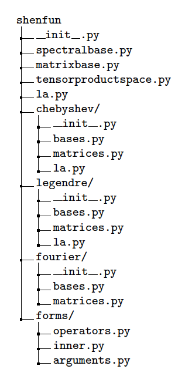

<!DOCTYPE html PUBLIC "-//W3C//DTD XHTML 1.0 Transitional//EN"
  "http://www.w3.org/TR/xhtml1/DTD/xhtml1-transitional.dtd">

<html xmlns="http://www.w3.org/1999/xhtml">
  <head>
    <meta http-equiv="Content-Type" content="text/html; charset=utf-8" />
    <title>Shenfun - automating the spectral Galerkin method &#8212; Shenfun - automating the spectral Galerkin method 1.0 documentation</title>
    <link rel="stylesheet" href="_static/default.css" type="text/css" />
    <link rel="stylesheet" href="_static/pygments.css" type="text/css" />
    <script type="text/javascript">
      var DOCUMENTATION_OPTIONS = {
        URL_ROOT:    './',
        VERSION:     '1.0',
        COLLAPSE_INDEX: false,
        FILE_SUFFIX: '.html',
        HAS_SOURCE:  true,
        SOURCELINK_SUFFIX: '.txt'
      };
    </script>
    <script type="text/javascript" src="_static/jquery.js"></script>
    <script type="text/javascript" src="_static/underscore.js"></script>
    <script type="text/javascript" src="_static/doctools.js"></script>
    <script type="text/javascript" src="https://cdnjs.cloudflare.com/ajax/libs/mathjax/2.7.1/MathJax.js?config=TeX-AMS-MML_HTMLorMML"></script>
    <script type="text/javascript" src="_static/sidebar.js"></script>
    <link rel="index" title="Index" href="genindex.html" />
    <link rel="search" title="Search" href="search.html" />
    <link rel="prev" title="Shenfun - automating the spectral Galerkin method" href="index.html" /> 
  
       <style type="text/css">
         div.admonition {
           background-color: whiteSmoke;
           border: 1px solid #bababa;
         }
       </style>
      </head>
    
  <body>
    <div class="related" role="navigation" aria-label="related navigation">
      <h3>Navigation</h3>
      <ul>
        <li class="right" style="margin-right: 10px">
          <a href="genindex.html" title="General Index"
             accesskey="I">index</a></li>
        <li class="right" >
          <a href="index.html" title="Shenfun - automating the spectral Galerkin method"
             accesskey="P">previous</a> |</li>
        <li class="nav-item nav-item-0"><a href="index.html">Shenfun - automating the spectral Galerkin method 1.0 documentation</a> &#187;</li> 
      </ul>
    </div>  

    <div class="document">
      <div class="documentwrapper">
          <div class="body" role="main">
            
  <div class="section" id="shenfun-automating-the-spectral-galerkin-method">
<h1>Shenfun - automating the spectral Galerkin method<a class="headerlink" href="#shenfun-automating-the-spectral-galerkin-method" title="Permalink to this headline">¶</a></h1>
<table class="docutils field-list" frame="void" rules="none">
<col class="field-name" />
<col class="field-body" />
<tbody valign="top">
<tr class="field-odd field"><th class="field-name">Authors:</th><td class="field-body">Mikael Mortensen (mikaem at math.uio.no)</td>
</tr>
<tr class="field-even field"><th class="field-name">Date:</th><td class="field-body">Aug 14, 2017</td>
</tr>
</tbody>
</table>
<p><em>Summary.</em> With the <code class="docutils literal"><span class="pre">shenfun</span></code> Python module (github.com/spectralDNS/shenfun) an effort is made towards automating the implementation of the spectral Galerkin method for simple tensor product domains, consisting of (currently) one non-periodic and any number of periodic directions. The user interface to <code class="docutils literal"><span class="pre">shenfun</span></code> is intentionally made very similar to FEniCS (fenicsproject.org). Partial Differential Equations are represented through weak variational forms and solved using efficient direct solvers where available. MPI decomposition is achieved through the <code class="docutils literal"><span class="pre">mpi4py-fft</span></code> module (bitbucket.org/mpi4py/mpi4py-fft),  and all developed solvers may, with no additional effort, be run on supercomputers using thousands of processors. Complete solvers are shown for the linear Poisson and biharmonic problems, as well as the nonlinear and time-dependent Ginzburg-Landau equation.</p>
<span class="target" id="index-0"></span><span class="target" id="index-1"></span><span class="target" id="index-2"></span><span class="target" id="index-3"></span><span class="target" id="index-4"></span><div class="section" id="introduction">
<span id="sec-introduction"></span><h2>Introduction<a class="headerlink" href="#introduction" title="Permalink to this headline">¶</a></h2>
<p>The spectral Galerkin method, see, e.g., Shen <a class="reference internal" href="#ref01" id="id1">[Ref01]</a> or Kopriva <a class="reference internal" href="#ref02" id="id2">[Ref02]</a>, combines spectral basis functions with the Galerkin method and allows for highly accurate solutions on simple, tensor product domains. Due to its accuracy and efficiency, the method is often favoured in studies of sensitive fundamental physical phenomena, where numerical errors needs to be avoided.</p>
<p>In this paper we will describe the <code class="docutils literal"><span class="pre">shenfun</span></code> Python module. The purpose of <code class="docutils literal"><span class="pre">shenfun</span></code> is to simplify the implementation of the spectral Galerkin method, to make it easily accessible to researchers, and to make it easier to solve advanced PDEs on supercomputers, with MPI, in simple tensor product domains. The package can solve equations for tensor product spaces consisting of any number of periodic directions, but, at the moment of writing, only one non-periodic direction. This configuration may sound trivial, but it occurs surprisingly often in physics, for example in plane shear flows like the channel or pipe. And these simple configurations are used heavily to enhance our understanding of fundamental physical processes, like turbulence, or transition to turbulence, turbulent mixing, and turbulent combustion.</p>
<p>The <code class="docutils literal"><span class="pre">shenfun</span></code> package is heavily influenced by the FEniCS project <a class="reference internal" href="#ref03" id="id3">[Ref03]</a>, that has made it trivial to solve PDEs in arbitrary complex domains with the finite element method (FEM). FEM also makes use of the Galerin method to set up variational forms. However, where FEM uses basis functions with only local support, the spectral Galerkin method uses basis functions with global support. The local support is one of the many nice features of the FEM, which makes it particularly attractive for unstructured and complex geometries. Spectral methods, on the other hand, are less flexible, but represent the gems of numerical methods, and, whenever possible, when the domain is simple and the solution is smooth, delivers the most accurate approximations.</p>
<p>There are many tools available for working with spectral methods. For MATLAB there is the elegant chebfun package <a class="reference internal" href="#ref04" id="id4">[Ref04]</a>, with an extensive list of application for, e.g., PDEs, ODEs or eigenvalue problems. However, being implemented in MATLAB, there is no feasible extension to DNS and supercomputers through MPI. Numpy and Scipy have modules for orthogonal polynomials (Jacobi, Chebyshev, Legendre, Hermite), and for Fourier transforms, which are both utilized by <code class="docutils literal"><span class="pre">shenfun</span></code>. The orthogonal module makes it easier to work with Chebyshev and Legendre polynomials, as it delivers, for example, quadrature points and weights for different quadrature rules (e.g., Chebyshev-Gauss, Legendre-Gauss).</p>
<p>To the author’s knowledge, all research codes developed for studying turbulent flows through Direct Numerical Simulations (DNS) on supercomputers have been written in low-level languages like Fortran, C or C++, see, e.g., <a class="reference internal" href="#ref05" id="id5">[Ref05]</a> <a class="reference internal" href="#ref06" id="id6">[Ref06]</a> <a class="reference internal" href="#ref07" id="id7">[Ref07]</a>, or <a class="reference internal" href="#ref08" id="id8">[Ref08]</a> for a list of high performance channel flow solvers. The codes are  highly tuned and tailored to a specific target, and, being low-level, the codes are not easily accessible to a non-expert programmer. Mortensen and Langtangen <a class="reference internal" href="#ref09" id="id9">[Ref09]</a> describe how a DNS solver can be written in Python in 100 lines of script-like code, and also show that the code, when optimized in the background using Cython, runs as fast as an identical C++ implementation on thousands of processors with MPI. {Shenfun} takes it one step further and aims at providing a generic toolbox for creating high performance, parallel solvers of any PDE, in a very high-level language. And without compromising much on computational efficiency. The key to developing such a high-level code in Python is efficient use of Numpy <a class="reference internal" href="#ref10" id="id10">[Ref10]</a>, with broadcasting and vectorization, and MPI for Python <a class="reference internal" href="#ref11" id="id11">[Ref11]</a>, that wraps almost the entire MPI library, and that can transfer Numpy arrays between thousands of processors at the same speed as a low-level C or Fortran code. Similarly, we utilize the pyFFTW module <a class="reference internal" href="#ref12" id="id12">[Ref12]</a>, that wraps most of the FFTW library <a class="reference internal" href="#ref13" id="id13">[Ref13]</a> and makes the FFT as fast when called from Python as it is when used in low-level codes.</p>
</div>
<div class="section" id="spectral-galerkin-method">
<span id="sec-preliminaries"></span><h2>Spectral Galerkin Method<a class="headerlink" href="#spectral-galerkin-method" title="Permalink to this headline">¶</a></h2>
<p>The spectral Galerkin method can most easily be described by considering a simple PDE, like the Poisson equation, in a 1D domain <span class="math">\(\Omega\)</span></p>
<div class="math" id="equation-eq:poisson">
<span class="eqno">(1)<a class="headerlink" href="#equation-eq:poisson" title="Permalink to this equation">¶</a></span>\[     -u''(x) = f(x), \quad x \in \Omega,\]</div>
<p>with appropriate boundary conditions (Dirichlet, Neumann or periodic). To solve this equation, we can define a test function <span class="math">\(v(x)\)</span> that satisfies the boundary conditions, and that comes with an accompanying weight function <span class="math">\(w(x)\)</span>. Assuming also that we work with complex valued functions, a weighted continuous inner product of the two functions <span class="math">\(u\)</span> and <span class="math">\(v\)</span> can be defined as</p>
<div class="math" id="equation-_auto1">
<span class="eqno">(2)<a class="headerlink" href="#equation-_auto1" title="Permalink to this equation">¶</a></span>\[     (u, v)_w = \int_{\Omega} u(x) \overline{v}(x) w(x) dx,\]</div>
<p>where <span class="math">\(\overline{v}\)</span> is the complex conjugate of <span class="math">\(v\)</span>. The weighted inner product can now be used to create variational forms. If we multiply Eq. <a class="reference internal" href="#equation-eq:poisson">(1)</a> with <span class="math">\(\overline{v}w\)</span> and integrate over the domain we obtain the variational form of the PDE</p>
<div class="math" id="equation-eq:weak_poisson">
<span class="eqno">(3)<a class="headerlink" href="#equation-eq:weak_poisson" title="Permalink to this equation">¶</a></span>\[     (-u'', v)_w = (f, v)_w.\]</div>
<p>The variational form can be solved numerically if <span class="math">\(u\)</span> and <span class="math">\(v\)</span> are approximated using a finite number <span class="math">\((N)\)</span> of test functions <span class="math">\(\{v_l(x)\}_{l=0}^{N-1}\)</span>, and a solution</p>
<div class="math" id="equation-_auto2">
<span class="eqno">(4)<a class="headerlink" href="#equation-_auto2" title="Permalink to this equation">¶</a></span>\[     u(x) = \sum_{l=0}^{N-1} \hat{u}_l v_l(x),\]</div>
<p>where <span class="math">\(\boldsymbol{\hat{u}} = \{\hat{u}_l\}_{l=0}^{N-1}\)</span> are the expansion coefficients, that are also recognised as the unknowns in the modal spectral Galerkin method.</p>
<p>If <span class="math">\(v\)</span> is chosen from a Fourier or Legendre basis, then the weight function used in the inner product is simply constant, and we may integrate <a class="reference internal" href="#equation-eq:weak_poisson">(3)</a> further using integration by parts. However, for a Chebyshev basis the weight function will be <span class="math">\(1/\sqrt{1-x^2}\)</span> and integration by parts is thus usually avoided. The weighted continuous inner product may, depending on the function that is to be integrated, be difficult or costly to evaluate. As such, we will in this work use the weighted <em>discrete</em> inner product instead, where the integral is approximated using quadrature</p>
<div class="math" id="equation-eq:quadrature">
<span class="eqno">(5)<a class="headerlink" href="#equation-eq:quadrature" title="Permalink to this equation">¶</a></span>\[     (u, v)_w^N = \sum_{j=0}^{N-1} u(x_j) \overline{v}(x_j) w_j  \approx  \int_{\Omega} u(x) \overline{v}(x) w(x) dx.\]</div>
<p>Here <span class="math">\(\{w_j\}_{j=0}^{N-1}\)</span> represents the quadrature weights and <span class="math">\(\{x_j\}_{j=0}^{N-1}\)</span> are the quadrature points for the integration.</p>
<p>The test functions <span class="math">\(v\)</span> will be chosen based in part on boundary conditions. However, regardless of which space the test functions are chosen from, the procedure for solving a PDE with the spectral Galerkin method is always the same:</p>
<blockquote>
<div><ul class="simple">
<li>Choose a basis satisfying boundary conditions.</li>
<li>Derive variational forms from PDEs using  weighted inner products.</li>
<li>Assemble and solve linear systems of equations for expansion coefficients.</li>
</ul>
</div></blockquote>
<p>In other words it is very much like a finite element method. The major difference is that the basis functions are global, i.e., they all span the entire domain, whereas in FEM the test functions only have local support.</p>
</div>
<div class="section" id="shenfun">
<span id="sec-shenfun"></span><h2>Shenfun<a class="headerlink" href="#shenfun" title="Permalink to this headline">¶</a></h2>
<p><code class="docutils literal"><span class="pre">shenfun</span></code> is a Python module package containing tools for working with the spectral Galerkin method. Shenfun implements classes for several bases with different boundary conditions, and within each class there are methods for transforms between spectral and real space, inner products, and for computing matrices arising from bilinear forms in the spectral Galerkin method. The Python module is organized as shown in Figure <a class="reference internal" href="#fig-directorytree"><span class="std std-ref">Directory tree</span></a>.</p>
<p>The <code class="docutils literal"><span class="pre">shenfun</span></code> language is very simple and closely follows that of FEniCS. A simple form implementation provides operators <code class="docutils literal"><span class="pre">div,</span> <span class="pre">grad,</span> <span class="pre">curl</span></code> and <code class="docutils literal"><span class="pre">Dx</span></code>, that act on three different types of basis functions, the <code class="docutils literal"><span class="pre">TestFunction</span></code>, <code class="docutils literal"><span class="pre">TrialFunction</span></code> and <code class="docutils literal"><span class="pre">Function</span></code>. Their usage is very similar to that from FEniCS, but not as general, nor flexible, since we are only conserned with simple tensor product grids and smooth solutions. The usage of these operators and basis functions will become clear in the following subchapters, where we will also describe the <code class="docutils literal"><span class="pre">inner</span></code> and <code class="docutils literal"><span class="pre">project</span></code> functions, with functionality as suggested by their names.</p>
<div class="figure" id="id15">
<span id="fig-directorytree"></span><a class="reference internal image-reference" href="_images/dirtree.png"></a>
<p class="caption"><span class="caption-number">Fig. 1 </span><span class="caption-text"><em>Directory tree</em></span></p>
</div>
<div class="section" id="classes-for-basis-functions">
<h3>Classes for basis functions<a class="headerlink" href="#classes-for-basis-functions" title="Permalink to this headline">¶</a></h3>
<p>The following bases are defined in submodules</p>
<blockquote>
<div><ul class="simple">
<li>shenfun.chebyshev.bases<ul>
<li>Basis - Regular Chebyshev</li>
<li>ShenDirichletBasis - Dirichlet boundary conditions</li>
<li>ShenNeumannBasis - Neumann boundary conditions (homogeneous)</li>
<li>ShenBiharmonicBasis - Homogeneous Dirichlet and Neumann boundary conditions</li>
</ul>
</li>
<li>shenfun.legendre.bases<ul>
<li>Basis - Regular Legendre</li>
<li>ShenDirichletBasis - Dirichlet boundary conditions</li>
<li>ShenNeumannBasis - Neumann boundary conditions (homogeneous)</li>
<li>ShenBiharmonicBasis - Homogeneous Dirichlet and Neumann boundary conditions</li>
</ul>
</li>
<li>shenfun.fourier.bases<ul>
<li>R2CBasis - Real to complex Fourier transforms</li>
<li>C2CBasis - Complex to complex transforms</li>
</ul>
</li>
</ul>
</div></blockquote>
<p>All bases have methods for transforms and inner products on single- or multidimensional Numpy data arrays. The following code shows how to create a Fourier basis and subsequently perform a forward and an inverse discrete Fourier transform on a random array. The <code class="docutils literal"><span class="pre">uc</span></code> array is only used to test that the transform cycle returns the original data.</p>
<div class="highlight-python"><div class="highlight"><pre><span></span><span class="gp">&gt;&gt;&gt; </span><span class="kn">from</span> <span class="nn">shenfun</span> <span class="kn">import</span> <span class="o">*</span>
<span class="gp">&gt;&gt;&gt; </span><span class="kn">import</span> <span class="nn">numpy</span> <span class="kn">as</span> <span class="nn">np</span>
<span class="gp">&gt;&gt;&gt; </span><span class="n">N</span> <span class="o">=</span> <span class="mi">16</span>
<span class="gp">&gt;&gt;&gt; </span><span class="n">FFT</span> <span class="o">=</span> <span class="n">fourier</span><span class="o">.</span><span class="n">bases</span><span class="o">.</span><span class="n">R2CBasis</span><span class="p">(</span><span class="n">N</span><span class="p">,</span> <span class="n">plan</span><span class="o">=</span><span class="bp">True</span><span class="p">)</span>
<span class="gp">&gt;&gt;&gt; </span><span class="n">u</span> <span class="o">=</span> <span class="n">np</span><span class="o">.</span><span class="n">random</span><span class="o">.</span><span class="n">random</span><span class="p">(</span><span class="n">N</span><span class="p">)</span>
<span class="gp">&gt;&gt;&gt; </span><span class="n">uc</span> <span class="o">=</span> <span class="n">u</span><span class="o">.</span><span class="n">copy</span><span class="p">()</span>
<span class="gp">&gt;&gt;&gt; </span><span class="n">u_hat</span> <span class="o">=</span> <span class="n">FFT</span><span class="o">.</span><span class="n">forward</span><span class="p">(</span><span class="n">u</span><span class="p">)</span>
<span class="gp">&gt;&gt;&gt; </span><span class="n">u</span> <span class="o">=</span> <span class="n">FFT</span><span class="o">.</span><span class="n">backward</span><span class="p">(</span><span class="n">u_hat</span><span class="p">)</span>
<span class="gp">&gt;&gt;&gt; </span><span class="k">assert</span> <span class="n">np</span><span class="o">.</span><span class="n">allclose</span><span class="p">(</span><span class="n">u</span><span class="p">,</span> <span class="n">uc</span><span class="p">)</span>
</pre></div>
</div>
</div>
<div class="section" id="classes-for-matrices">
<span id="sec-matrices"></span><h3>Classes for matrices<a class="headerlink" href="#classes-for-matrices" title="Permalink to this headline">¶</a></h3>
<p>Matrices that arise with the spectral Galerkin method using Fourier or Shen’s modified basis functions (see, e.g., Eqs <a class="reference internal" href="#equation-eq:chebdirichlet">(23)</a>, <a class="reference internal" href="#equation-eq:legdirichlet">(24)</a>), are typically sparse and diagonal in structure. The sparse structure allows for a very compact storage, and <code class="docutils literal"><span class="pre">shenfun</span></code> has its own Matrix-class that is subclassing a Python dictionary, where keys are diagonal offsets, and values are the values along the diagonal. Some of the more important methods of the <code class="docutils literal"><span class="pre">SparseMatrix</span></code> class are shown below:</p>
<div class="highlight-python"><div class="highlight"><pre><span></span><span class="k">class</span> <span class="nc">SparseMatrix</span><span class="p">(</span><span class="nb">dict</span><span class="p">):</span>
    <span class="k">def</span> <span class="fm">__init__</span><span class="p">(</span><span class="bp">self</span><span class="p">,</span> <span class="n">d</span><span class="p">,</span> <span class="n">shape</span><span class="p">):</span>
        <span class="nb">dict</span><span class="o">.</span><span class="fm">__init__</span><span class="p">(</span><span class="bp">self</span><span class="p">,</span> <span class="n">d</span><span class="p">)</span>
        <span class="bp">self</span><span class="o">.</span><span class="n">shape</span> <span class="o">=</span> <span class="n">shape</span>

    <span class="k">def</span> <span class="nf">diags</span><span class="p">(</span><span class="bp">self</span><span class="p">,</span> <span class="n">format</span><span class="o">=</span><span class="s1">&#39;dia&#39;</span><span class="p">):</span>
        <span class="sd">&quot;&quot;&quot;Return Scipy sparse matrix&quot;&quot;&quot;</span>

    <span class="k">def</span> <span class="nf">matvec</span><span class="p">(</span><span class="bp">self</span><span class="p">,</span> <span class="n">u</span><span class="p">,</span> <span class="n">x</span><span class="p">,</span> <span class="n">format</span><span class="o">=</span><span class="s1">&#39;dia&#39;</span><span class="p">,</span> <span class="n">axis</span><span class="o">=</span><span class="mi">0</span><span class="p">):</span>
        <span class="sd">&quot;&quot;&quot;Return Matrix vector product self*u in x&quot;&quot;&quot;</span>

    <span class="k">def</span> <span class="nf">solve</span><span class="p">(</span><span class="bp">self</span><span class="p">,</span> <span class="n">b</span><span class="p">,</span> <span class="n">u</span><span class="o">=</span><span class="bp">None</span><span class="p">,</span> <span class="n">axis</span><span class="o">=</span><span class="mi">0</span><span class="p">):</span>
        <span class="sd">&quot;&quot;&quot;Return solution u to self*u = b&quot;&quot;&quot;</span>
</pre></div>
</div>
<p>For example, we may declare a tridiagonal matrix of shape N x N as</p>
<div class="highlight-python"><div class="highlight"><pre><span></span><span class="gp">&gt;&gt;&gt; </span><span class="n">N</span> <span class="o">=</span> <span class="mi">4</span>
<span class="gp">&gt;&gt;&gt; </span><span class="n">d</span> <span class="o">=</span> <span class="p">{</span><span class="o">-</span><span class="mi">1</span><span class="p">:</span> <span class="mi">1</span><span class="p">,</span> <span class="mi">0</span><span class="p">:</span> <span class="o">-</span><span class="mi">2</span><span class="p">,</span> <span class="mi">1</span><span class="p">:</span> <span class="mi">1</span><span class="p">}</span>
<span class="gp">&gt;&gt;&gt; </span><span class="n">A</span> <span class="o">=</span> <span class="n">SparseMatrix</span><span class="p">(</span><span class="n">d</span><span class="p">,</span> <span class="p">(</span><span class="n">N</span><span class="p">,</span> <span class="n">N</span><span class="p">))</span>
</pre></div>
</div>
<p>or similarly as</p>
<div class="highlight-python"><div class="highlight"><pre><span></span><span class="gp">&gt;&gt;&gt; </span><span class="n">d</span> <span class="o">=</span> <span class="p">{</span><span class="o">-</span><span class="mi">1</span><span class="p">:</span> <span class="n">np</span><span class="o">.</span><span class="n">ones</span><span class="p">(</span><span class="n">N</span><span class="o">-</span><span class="mi">1</span><span class="p">),</span> <span class="mi">0</span><span class="p">:</span> <span class="o">-</span><span class="mi">2</span><span class="o">*</span><span class="n">np</span><span class="o">.</span><span class="n">ones</span><span class="p">(</span><span class="n">N</span><span class="p">)}</span>
<span class="gp">&gt;&gt;&gt; </span><span class="n">d</span><span class="p">[</span><span class="mi">1</span><span class="p">]</span> <span class="o">=</span> <span class="n">d</span><span class="p">[</span><span class="o">-</span><span class="mi">1</span><span class="p">]</span>  <span class="c1"># Symmetric, reuse np.ones array</span>
<span class="gp">&gt;&gt;&gt; </span><span class="n">A</span> <span class="o">=</span> <span class="n">SparseMatrix</span><span class="p">(</span><span class="n">d</span><span class="p">,</span> <span class="p">(</span><span class="n">N</span><span class="p">,</span> <span class="n">N</span><span class="p">))</span>
<span class="gp">&gt;&gt;&gt; </span><span class="n">A</span>
<span class="go">{-1: array([ 1.,  1.,  1.]),</span>
<span class="go">  0: array([-2., -2., -2., -2.]),</span>
<span class="go">  1: array([ 1.,  1.,  1.])}</span>
</pre></div>
</div>
<p>The matrix is a subclassed dictionary. If you want a regular <em>Scipy</em> sparse matrix instead, with all of its associated methods (solve, matrix-vector, etc.), then it is just a matter of</p>
<div class="highlight-python"><div class="highlight"><pre><span></span><span class="gp">&gt;&gt;&gt; </span><span class="n">A</span><span class="o">.</span><span class="n">diags</span><span class="p">()</span>
<span class="go">&lt;4x4 sparse matrix of type &#39;&lt;class &#39;numpy.float64&#39;&gt;&#39;</span>
<span class="go">    with 10 stored elements (3 diagonals) in DIAgonal format&gt;</span>
<span class="gp">&gt;&gt;&gt; </span><span class="n">A</span><span class="o">.</span><span class="n">diags</span><span class="p">()</span><span class="o">.</span><span class="n">toarray</span><span class="p">()</span>
<span class="go">array([[-2.,  1.,  0.,  0.],</span>
<span class="go">       [ 1., -2.,  1.,  0.],</span>
<span class="go">       [ 0.,  1., -2.,  1.],</span>
<span class="go">       [ 0.,  0.,  1., -2.]])</span>
</pre></div>
</div>
</div>
<div class="section" id="variational-forms-in-1d">
<h3>Variational forms in 1D<a class="headerlink" href="#variational-forms-in-1d" title="Permalink to this headline">¶</a></h3>
<p>Weak variational forms are created using test and trial functions, as shown in the section <a class="reference internal" href="#sec-preliminaries"><span class="std std-ref">Spectral Galerkin Method</span></a>. Test and trial functions can be created for any basis in <code class="docutils literal"><span class="pre">shenfun</span></code>, as shown below for a Chebyshev Dirichlet basis with 8 quadrature points</p>
<div class="highlight-python"><div class="highlight"><pre><span></span><span class="gp">&gt;&gt;&gt; </span><span class="kn">from</span> <span class="nn">shenfun.chebyshev.bases</span> <span class="kn">import</span> <span class="n">ShenDirichletBasis</span>
<span class="gp">&gt;&gt;&gt; </span><span class="kn">from</span> <span class="nn">shenfun</span> <span class="kn">import</span> <span class="n">inner</span><span class="p">,</span> <span class="n">TestFunction</span><span class="p">,</span> <span class="n">TrialFunction</span>
<span class="gp">&gt;&gt;&gt; </span><span class="n">N</span> <span class="o">=</span> <span class="mi">8</span>
<span class="gp">&gt;&gt;&gt; </span><span class="n">SD</span> <span class="o">=</span> <span class="n">ShenDirichletBasis</span><span class="p">(</span><span class="n">N</span><span class="p">,</span> <span class="n">plan</span><span class="o">=</span><span class="bp">True</span><span class="p">)</span>
<span class="gp">&gt;&gt;&gt; </span><span class="n">u</span> <span class="o">=</span> <span class="n">TrialFunction</span><span class="p">(</span><span class="n">SD</span><span class="p">)</span>
<span class="gp">&gt;&gt;&gt; </span><span class="n">v</span> <span class="o">=</span> <span class="n">TestFunction</span><span class="p">(</span><span class="n">SD</span><span class="p">)</span>
</pre></div>
</div>
<p>A matrix that is the result of a bilinear form has its own subclass of <code class="docutils literal"><span class="pre">SparseMatrix</span></code>, called a <code class="docutils literal"><span class="pre">SpectralMatrix</span></code>. A <code class="docutils literal"><span class="pre">SpectralMatrix</span></code> is created using <code class="docutils literal"><span class="pre">inner</span></code> products on test and trial functions, for example the mass matrix:</p>
<div class="highlight-python"><div class="highlight"><pre><span></span><span class="gp">&gt;&gt;&gt; </span><span class="n">mass</span> <span class="o">=</span> <span class="n">inner</span><span class="p">(</span><span class="n">u</span><span class="p">,</span> <span class="n">v</span><span class="p">)</span>
<span class="gp">&gt;&gt;&gt; </span><span class="n">mass</span>
<span class="go">{-2: array([-1.57079633]),</span>
<span class="go">  0: array([ 4.71238898,  3.1415</span>
<span class="go">             3.14159265, 3.14159265]),</span>
<span class="go">  2: array([-1.57079633])}</span>
</pre></div>
</div>
<p>This <code class="docutils literal"><span class="pre">mass</span></code> matrix will be the same as Eq. (2.5) of <a class="reference internal" href="#ref01" id="id14">[Ref01]</a>, and it will be an instance of the <code class="docutils literal"><span class="pre">SpectralMatrix</span></code> class.
You may notice that <code class="docutils literal"><span class="pre">mass</span></code> takes advantage of the fact that two diagonals are constant and consequently only stores one single value.</p>
<p>The <code class="docutils literal"><span class="pre">inner</span></code> method may be used to compute any linear or bilinear form. For example the stiffness matrix <code class="docutils literal"><span class="pre">K</span></code></p>
<div class="highlight-python"><div class="highlight"><pre><span></span><span class="gp">&gt;&gt;&gt; </span><span class="n">K</span> <span class="o">=</span> <span class="n">inner</span><span class="p">(</span><span class="n">v</span><span class="p">,</span> <span class="n">div</span><span class="p">(</span><span class="n">grad</span><span class="p">(</span><span class="n">u</span><span class="p">)))</span>
</pre></div>
</div>
<p>Square matrices have implemented a solve method that is using fast <span class="math">\(\mathcal{O}(N)\)</span> direct LU decomposition or similar, if available, and falls back on using Scipy’s solver in CSR format if no better method is found implemented. For example, to solve the linear system <code class="docutils literal"><span class="pre">Ku=b</span></code></p>
<div class="highlight-python"><div class="highlight"><pre><span></span><span class="gp">&gt;&gt;&gt; </span><span class="n">fj</span> <span class="o">=</span> <span class="n">np</span><span class="o">.</span><span class="n">random</span><span class="o">.</span><span class="n">random</span><span class="p">(</span><span class="n">N</span><span class="p">)</span>
<span class="gp">&gt;&gt;&gt; </span><span class="n">b</span> <span class="o">=</span> <span class="n">inner</span><span class="p">(</span><span class="n">v</span><span class="p">,</span> <span class="n">fj</span><span class="p">)</span>
<span class="gp">&gt;&gt;&gt; </span><span class="n">u</span> <span class="o">=</span> <span class="n">np</span><span class="o">.</span><span class="n">zeros_like</span><span class="p">(</span><span class="n">b</span><span class="p">)</span>
<span class="gp">&gt;&gt;&gt; </span><span class="n">u</span> <span class="o">=</span> <span class="n">K</span><span class="o">.</span><span class="n">solve</span><span class="p">(</span><span class="n">b</span><span class="p">,</span> <span class="n">u</span><span class="p">)</span>
</pre></div>
</div>
<p>All methods are designed to work along any dimension of a multidimensional array. Very little differs in the users interface. Consider, for example, the previous example on a three-dimensional cube</p>
<div class="highlight-python"><div class="highlight"><pre><span></span><span class="gp">&gt;&gt;&gt; </span><span class="n">fj</span> <span class="o">=</span> <span class="n">np</span><span class="o">.</span><span class="n">random</span><span class="o">.</span><span class="n">random</span><span class="p">((</span><span class="n">N</span><span class="p">,</span> <span class="n">N</span><span class="p">,</span> <span class="n">N</span><span class="p">))</span>
<span class="gp">&gt;&gt;&gt; </span><span class="n">b</span> <span class="o">=</span> <span class="n">inner</span><span class="p">(</span><span class="n">v</span><span class="p">,</span> <span class="n">fj</span><span class="p">)</span>
<span class="gp">&gt;&gt;&gt; </span><span class="n">u</span> <span class="o">=</span> <span class="n">np</span><span class="o">.</span><span class="n">zeros_like</span><span class="p">(</span><span class="n">b</span><span class="p">)</span>
<span class="gp">&gt;&gt;&gt; </span><span class="n">u</span> <span class="o">=</span> <span class="n">K</span><span class="o">.</span><span class="n">solve</span><span class="p">(</span><span class="n">b</span><span class="p">,</span> <span class="n">u</span><span class="p">)</span>
</pre></div>
</div>
<p>where <code class="docutils literal"><span class="pre">K</span></code> is exactly the same as before, from the 1D example. The matrix solve is applied along the first dimension since this is the default behaviour.</p>
<p>The bases also have methods for transforming between spectral and real space. For example, one may project a random vector to the <code class="docutils literal"><span class="pre">SD</span></code> space using</p>
<div class="highlight-text"><div class="highlight"><pre><span></span>&gt;&gt;&gt; fj = np.random.random(N)
&gt;&gt;&gt; fk = np.zeros_like(fj)
&gt;&gt;&gt; fk = SD.forward(fj, fk) # Gets expansion coefficients
</pre></div>
</div>
<p>and back to real physical space again</p>
<div class="highlight-python"><div class="highlight"><pre><span></span><span class="gp">&gt;&gt;&gt; </span><span class="n">fj</span> <span class="o">=</span> <span class="n">SD</span><span class="o">.</span><span class="n">backward</span><span class="p">(</span><span class="n">fk</span><span class="p">,</span> <span class="n">fj</span><span class="p">)</span>
</pre></div>
</div>
<p>Note that <code class="docutils literal"><span class="pre">fj</span></code> now will be different than the original <code class="docutils literal"><span class="pre">fj</span></code> since it now has homogeneous boundary conditions. However, if we transfer back and forth one more time, starting from <code class="docutils literal"><span class="pre">fj</span></code> which is in the Dirichlet function space, then we come back to the same array:</p>
<div class="highlight-python"><div class="highlight"><pre><span></span><span class="gp">&gt;&gt;&gt; </span><span class="n">fj_copy</span> <span class="o">=</span> <span class="n">fj</span><span class="o">.</span><span class="n">copy</span><span class="p">()</span>
<span class="gp">&gt;&gt;&gt; </span><span class="n">fk</span> <span class="o">=</span> <span class="n">SD</span><span class="o">.</span><span class="n">forward</span><span class="p">(</span><span class="n">fj</span><span class="p">,</span> <span class="n">fk</span><span class="p">)</span>
<span class="gp">&gt;&gt;&gt; </span><span class="n">fj</span> <span class="o">=</span> <span class="n">SD</span><span class="o">.</span><span class="n">backward</span><span class="p">(</span><span class="n">fk</span><span class="p">,</span> <span class="n">fj</span><span class="p">)</span>
<span class="gp">&gt;&gt;&gt; </span><span class="k">assert</span> <span class="n">np</span><span class="o">.</span><span class="n">allclose</span><span class="p">(</span><span class="n">fj</span><span class="p">,</span> <span class="n">fj_copy</span><span class="p">)</span> <span class="c1"># Is True</span>
</pre></div>
</div>
</div>
<div class="section" id="poisson-equation-implemented-in-1d">
<h3>Poisson equation implemented in 1D<a class="headerlink" href="#poisson-equation-implemented-in-1d" title="Permalink to this headline">¶</a></h3>
<p>We have now shown the usage of <code class="docutils literal"><span class="pre">shenfun</span></code> for single, one-dimensional spaces. It does not become really interesting before we start looking into tensor product grids in higher dimensions, but before we go there we revisit the spectral Galerkin method for a 1D Poisson problem, and show how the implementation of this problem can be performed using <code class="docutils literal"><span class="pre">shenfun</span></code>.</p>
<div class="section" id="periodic-boundary-conditions">
<span id="sec-fourierpoisson"></span><h4>Periodic boundary conditions<a class="headerlink" href="#periodic-boundary-conditions" title="Permalink to this headline">¶</a></h4>
<p>If the solution to Eq. <a class="reference internal" href="#equation-eq:poisson">(1)</a> is periodic with periodic length <span class="math">\(2 \pi\)</span>, then we use <span class="math">\(\Omega \in [0, 2 \pi]\)</span> and it will be natural to choose the test functions from the space consisting of the Fourier basis functions, i.e.,  <span class="math">\(v_l(x)=e^{ilx}\)</span>. The mesh <span class="math">\(\boldsymbol{x} = \{x_j\}_{j=0}^{N-1}\)</span> will be uniformly spaced</p>
<div class="math" id="equation-_auto3">
<span class="eqno">(6)<a class="headerlink" href="#equation-_auto3" title="Permalink to this equation">¶</a></span>\[     \boldsymbol{x} = \frac{2 \pi j}{N}  \quad j=0,1,\ldots, N-1,\]</div>
<p>and we look for solutions of the form</p>
<div class="math" id="equation-eq:ufourier">
<span class="eqno">(7)<a class="headerlink" href="#equation-eq:ufourier" title="Permalink to this equation">¶</a></span>\[     u(x_j) = \sum_{l=-N/2}^{N/2-1} \hat{u}_l e^{ilx_j} \quad  j=0,1,\ldots N-1.\]</div>
<p>Note that for Fourier basis functions it is customary (used by both MATLAB and Numpy) to use the wavenumbermesh</p>
<div class="math" id="equation-eq:wavenumber_even">
<span class="eqno">(8)<a class="headerlink" href="#equation-eq:wavenumber_even" title="Permalink to this equation">¶</a></span>\[     \boldsymbol{l} = -N/2, -N/2+1, \ldots, N/2-1,\]</div>
<p>where we have assumed that <span class="math">\(N\)</span> is even. Also note that Eq. <a class="reference internal" href="#equation-eq:ufourier">(7)</a> naively would be computed in <span class="math">\(\mathcal{O}(N^2)\)</span> operations, but that it can be computed much faster <span class="math">\(\mathcal{O}(N\log N)\)</span> using the discrete inverse Fourier transform</p>
<div class="math" id="equation-_auto4">
<span class="eqno">(9)<a class="headerlink" href="#equation-_auto4" title="Permalink to this equation">¶</a></span>\[     \boldsymbol{u} = \mathcal{F}^{-1}(\boldsymbol{\hat{u}}),\]</div>
<p>where we use compact notation <span class="math">\(\boldsymbol{u} = \{u(x_j)\}_{j=0}^{N-1}\)</span>.</p>
<p>To solve Eq. <a class="reference internal" href="#equation-eq:poisson">(1)</a> with the discrete spectral Galerkin method, we create the basis <span class="math">\(V^p = \text{span}\{ e^{ilx} , \text{ for } l \in \boldsymbol{l}\}\)</span> and attempt to find <span class="math">\(u \in V^p\)</span> such that</p>
<div class="math" id="equation-_auto5">
<span class="eqno">(10)<a class="headerlink" href="#equation-_auto5" title="Permalink to this equation">¶</a></span>\[     (-u'', v)_w^N = (f, v)_w^N, \quad \forall \, v \in V^p.\]</div>
<p>Inserting for Eq. <a class="reference internal" href="#equation-eq:ufourier">(7)</a> and using <span class="math">\(e^{imx}\)</span> as test function we obtain</p>
<div class="math" id="equation-_auto6">
<span class="eqno">(11)<a class="headerlink" href="#equation-_auto6" title="Permalink to this equation">¶</a></span>\[     -(\sum_{l \in \boldsymbol{l}} \hat{u}_l (e^{ilx})'', e^{imx})_w^N = (f(x), e^{imx})_w^N \quad \forall \, m \in \boldsymbol{l}\]</div>
<div class="math" id="equation-eq:utmp">
<span class="eqno">(12)<a class="headerlink" href="#equation-eq:utmp" title="Permalink to this equation">¶</a></span>\[     \sum_{l \in \boldsymbol{l}} l^2( e^{ilx}, e^{imx})_w^N \hat{u}_l = (f(x), e^{imx})_w ^N\quad \forall \, m \in \boldsymbol{l}.\]</div>
<p>Note that the discrete inner product <a class="reference internal" href="#equation-eq:quadrature">(5)</a> is used, and we also need to interpolate the function <span class="math">\(f(x)\)</span> onto the grid <span class="math">\(\boldsymbol{x}\)</span>. For Fourier it becomes very simple since the weight functions are constant <span class="math">\(w_j = 2\pi/N\)</span> and we have for the left hand side simply a diagonal matrix</p>
<div class="math" id="equation-_auto7">
<span class="eqno">(13)<a class="headerlink" href="#equation-_auto7" title="Permalink to this equation">¶</a></span>\[     ( e^{ilx}, e^{imx})^N = 2\pi \delta_{ml} \quad \text{for} \, l, m \in \boldsymbol{l} \times \boldsymbol{l},\]</div>
<p>where <span class="math">\(\delta_{ml}\)</span> is the kronecker delta function.
For the right hand side we have</p>
<div class="math" id="equation-_auto8">
<span class="eqno">(14)<a class="headerlink" href="#equation-_auto8" title="Permalink to this equation">¶</a></span>\[     (f(x), e^{imx})^N = \frac{2 \pi}{N}\sum_{j=0}^{N-1} f(x_j) e^{-imx_j} \quad \text{for } m \in \boldsymbol{l},\]</div>
<div class="math" id="equation-_auto9">
<span class="eqno">(15)<a class="headerlink" href="#equation-_auto9" title="Permalink to this equation">¶</a></span>\[      = 2 \pi \mathcal{F}_m(f(\boldsymbol{x})),\]</div>
<div class="math" id="equation-_auto10">
<span class="eqno">(16)<a class="headerlink" href="#equation-_auto10" title="Permalink to this equation">¶</a></span>\[      = 2 \pi \hat{f}_m,\]</div>
<p>where <span class="math">\(\mathcal{F}\)</span> represents the discrete Fourier transform that is defined as</p>
<div class="math" id="equation-_auto11">
<span class="eqno">(17)<a class="headerlink" href="#equation-_auto11" title="Permalink to this equation">¶</a></span>\[     \hat{u}_l = \frac{1}{N}\sum_{j=0}^{N-1} u(x_j) e^{-ilx_j}, \quad \text{for } l \in \boldsymbol{l},\]</div>
<p>or simply</p>
<div class="math" id="equation-_auto12">
<span class="eqno">(18)<a class="headerlink" href="#equation-_auto12" title="Permalink to this equation">¶</a></span>\[       \boldsymbol{\hat{u}} = \mathcal{F}(\boldsymbol{u}).\]</div>
<p>Putting it all together we can set up the assembled linear system of equations for <span class="math">\(\hat{u}_l\)</span> in <a class="reference internal" href="#equation-eq:utmp">(12)</a></p>
<div class="math" id="equation-_auto13">
<span class="eqno">(19)<a class="headerlink" href="#equation-_auto13" title="Permalink to this equation">¶</a></span>\[     \sum_{l \in \boldsymbol{l}}2 \pi l^2 \delta_{ml} \hat{u}_l = 2 \pi \hat{f}_{m} \quad \forall \, m \in \boldsymbol{l},\]</div>
<p>which is trivially solved since it only involves a diagonal matrix (<span class="math">\(\delta_{ml}\)</span>), and we obtain</p>
<div class="math" id="equation-_auto14">
<span class="eqno">(20)<a class="headerlink" href="#equation-_auto14" title="Permalink to this equation">¶</a></span>\[     \hat{u}_l = \frac{1}{l^2} \hat{f}_{l} \quad \forall \,l  \in \boldsymbol{l} \setminus{\{0\}}.\]</div>
<p>So, even though we carefully followed the spectral Galerkin method, we have ended up with the same result that would have been obtained with a Fourier collocation method, where one simply takes the Fourier transform of the Poisson equation and differentiate analytically.</p>
<p>With <code class="docutils literal"><span class="pre">shenfun</span></code> the periodic 1D Poisson equation can be trivially computed either with the collocation approach or the spectral Galerkin method. The procedure for the spectral Galerkin method will be shown first, before the entire problem is solved. All <code class="docutils literal"><span class="pre">shenfun</span></code> demos in this paper will contain a similar preample section where some necessary Python classes, modules and functions are imported. We import Numpy since <code class="docutils literal"><span class="pre">shenfun</span></code> arrays are Numpy arrays, and we import from Sympy to construct some exact solution used to verify the code. Note also the similarity to FEniCS with the import of methods and classes <code class="docutils literal"><span class="pre">inner,</span> <span class="pre">div,</span> <span class="pre">grad,</span> <span class="pre">TestFunction,</span> <span class="pre">TrialFunction</span></code>.  The Fourier spectral Galerkin method in turn requires that the <code class="docutils literal"><span class="pre">FourierBasis</span></code> is imported as well.</p>
<div class="highlight-python"><div class="highlight"><pre><span></span><span class="kn">from</span> <span class="nn">sympy</span> <span class="kn">import</span> <span class="n">Symbol</span><span class="p">,</span> <span class="n">cos</span>
<span class="kn">import</span> <span class="nn">numpy</span> <span class="kn">as</span> <span class="nn">np</span>
<span class="kn">from</span> <span class="nn">shenfun</span> <span class="kn">import</span> <span class="n">inner</span><span class="p">,</span> <span class="n">div</span><span class="p">,</span> <span class="n">grad</span><span class="p">,</span> <span class="n">TestFunction</span><span class="p">,</span> <span class="n">TrialFunction</span>
<span class="kn">from</span> <span class="nn">shenfun.fourier.bases</span> <span class="kn">import</span> <span class="n">FourierBasis</span>

<span class="c1"># Use Sympy to compute a rhs, given an analytical solution</span>
<span class="n">x</span> <span class="o">=</span> <span class="n">Symbol</span><span class="p">(</span><span class="s2">&quot;x&quot;</span><span class="p">)</span>
<span class="n">ue</span> <span class="o">=</span> <span class="n">cos</span><span class="p">(</span><span class="mi">4</span><span class="o">*</span><span class="n">x</span><span class="p">)</span>
<span class="n">fe</span> <span class="o">=</span> <span class="n">ue</span><span class="o">.</span><span class="n">diff</span><span class="p">(</span><span class="n">x</span><span class="p">,</span> <span class="mi">2</span><span class="p">)</span>

<span class="c1"># Create Fourier basis with N basis functions</span>
<span class="n">N</span> <span class="o">=</span> <span class="mi">32</span>
<span class="n">ST</span> <span class="o">=</span> <span class="n">FourierBasis</span><span class="p">(</span><span class="n">N</span><span class="p">,</span> <span class="n">np</span><span class="o">.</span><span class="n">float</span><span class="p">,</span> <span class="n">plan</span><span class="o">=</span><span class="bp">True</span><span class="p">)</span>
<span class="n">u</span> <span class="o">=</span> <span class="n">TrialFunction</span><span class="p">(</span><span class="n">ST</span><span class="p">)</span>
<span class="n">v</span> <span class="o">=</span> <span class="n">TestFunction</span><span class="p">(</span><span class="n">ST</span><span class="p">)</span>
<span class="n">X</span> <span class="o">=</span> <span class="n">ST</span><span class="o">.</span><span class="n">mesh</span><span class="p">(</span><span class="n">N</span><span class="p">)</span>

<span class="c1"># Get f and exact solution on quad points</span>
<span class="n">fj</span> <span class="o">=</span> <span class="n">np</span><span class="o">.</span><span class="n">array</span><span class="p">([</span><span class="n">fe</span><span class="o">.</span><span class="n">subs</span><span class="p">(</span><span class="n">x</span><span class="p">,</span> <span class="n">j</span><span class="p">)</span> <span class="k">for</span> <span class="n">j</span> <span class="ow">in</span> <span class="n">X</span><span class="p">],</span> <span class="n">dtype</span><span class="o">=</span><span class="n">np</span><span class="o">.</span><span class="n">float</span><span class="p">)</span>
<span class="n">uj</span> <span class="o">=</span> <span class="n">np</span><span class="o">.</span><span class="n">array</span><span class="p">([</span><span class="n">ue</span><span class="o">.</span><span class="n">subs</span><span class="p">(</span><span class="n">x</span><span class="p">,</span> <span class="n">i</span><span class="p">)</span> <span class="k">for</span> <span class="n">i</span> <span class="ow">in</span> <span class="n">X</span><span class="p">],</span> <span class="n">dtype</span><span class="o">=</span><span class="n">np</span><span class="o">.</span><span class="n">float</span><span class="p">)</span>

<span class="c1"># Assemble right and left hand sides</span>
<span class="n">f_hat</span> <span class="o">=</span> <span class="n">inner</span><span class="p">(</span><span class="n">v</span><span class="p">,</span> <span class="n">fj</span><span class="p">)</span>
<span class="n">A</span> <span class="o">=</span> <span class="n">inner</span><span class="p">(</span><span class="n">v</span><span class="p">,</span> <span class="n">div</span><span class="p">(</span><span class="n">grad</span><span class="p">(</span><span class="n">u</span><span class="p">)))</span>

<span class="c1"># Solve Poisson equation</span>
<span class="n">u_hat</span> <span class="o">=</span> <span class="n">A</span><span class="o">.</span><span class="n">solve</span><span class="p">(</span><span class="n">f_hat</span><span class="p">)</span>

<span class="c1"># Transfer solution back to real space</span>
<span class="n">uq</span> <span class="o">=</span> <span class="n">ST</span><span class="o">.</span><span class="n">backward</span><span class="p">(</span><span class="n">u_hat</span><span class="p">)</span>
<span class="k">assert</span> <span class="n">np</span><span class="o">.</span><span class="n">allclose</span><span class="p">(</span><span class="n">uj</span><span class="p">,</span> <span class="n">uq</span><span class="p">)</span>
</pre></div>
</div>
<p>Naturally, this simple problem could be solved easier with a Fourier collocation instead, and  a simple pure 1D Fourier problem does not illuminate the true advantages of  <code class="docutils literal"><span class="pre">shenfun</span></code>, that only will become evident when we look at higher dimensional problems with tensor product spaces. To solve with collocation, we could simply do</p>
<div class="highlight-python"><div class="highlight"><pre><span></span><span class="c1"># Transform right hand side</span>
<span class="n">f_hat</span> <span class="o">=</span> <span class="n">ST</span><span class="o">.</span><span class="n">forward</span><span class="p">(</span><span class="n">fj</span><span class="p">)</span>

<span class="c1"># Wavenumers</span>
<span class="n">k</span> <span class="o">=</span> <span class="n">ST</span><span class="o">.</span><span class="n">wavenumbers</span><span class="p">(</span><span class="n">N</span><span class="p">)</span>
<span class="n">k</span><span class="p">[</span><span class="mi">0</span><span class="p">]</span> <span class="o">=</span> <span class="mi">1</span>

<span class="c1"># Solve Poisson equation (solution in f_hat)</span>
<span class="n">f_hat</span> <span class="o">/=</span> <span class="n">k</span><span class="o">**</span><span class="mi">2</span>
</pre></div>
</div>
<p>Note that <code class="docutils literal"><span class="pre">ST</span></code> methods <code class="docutils literal"><span class="pre">forward/backward</span></code> correspond to forward and inverse discrete Fourier transforms. Furthermore, since the input data <code class="docutils literal"><span class="pre">fj</span></code> is of type float (not complex), the transforms make use of the symmetry of the Fourier transform of real data, that <span class="math">\(\hat{u}_k = \overline{\hat{u}}_{N-k}\)</span>, and that <span class="math">\(\boldsymbol{k}=0,1,\ldots, N/2\)</span> (index set computed as <code class="docutils literal"><span class="pre">k</span> <span class="pre">=</span> <span class="pre">ST.wavenumbers(N)</span></code>).</p>
</div>
<div class="section" id="dirichlet-boundary-conditions">
<span id="sec-dirichletpoisson"></span><h4>Dirichlet boundary conditions<a class="headerlink" href="#dirichlet-boundary-conditions" title="Permalink to this headline">¶</a></h4>
<p>If the Poisson equation is subject to Dirichlet boundary conditions on the edge of the domain <span class="math">\(\Omega \in [-1, 1]\)</span>, then a natural choice is to use Chebyshev or Legendre polynomials. Two test functions that strongly fixes the boundary condition <span class="math">\(u(\pm 1)=0\)</span> are</p>
<div class="math" id="equation-_auto15">
<span class="eqno">(21)<a class="headerlink" href="#equation-_auto15" title="Permalink to this equation">¶</a></span>\[     v_l(x) = T_l(x) - T_{l+2}(x),\]</div>
<p>where <span class="math">\(T_l(x)\)</span> is the l’th order Chebyshev polynomial of the first kind, or</p>
<div class="math" id="equation-eq:shen_legendre_basis">
<span class="eqno">(22)<a class="headerlink" href="#equation-eq:shen_legendre_basis" title="Permalink to this equation">¶</a></span>\[     v_l(x) = L_l(x) - L_{l+2}(x),\]</div>
<p>where <span class="math">\(L_l(x)\)</span> is the l’th order Legendre polynomial. The test functions give rise to functionspaces</p>
<div class="math" id="equation-eq:chebdirichlet">
<span class="eqno">(23)<a class="headerlink" href="#equation-eq:chebdirichlet" title="Permalink to this equation">¶</a></span>\[     V^C = \text{span}\{T_l-T_{l+2}, l \in \boldsymbol{l}^D\},\]</div>
<div class="math" id="equation-eq:legdirichlet">
<span class="eqno">(24)<a class="headerlink" href="#equation-eq:legdirichlet" title="Permalink to this equation">¶</a></span>\[     V^L = \text{span}\{L_l-L_{l+2}, l \in \boldsymbol{l}^D\},\]</div>
<p>where</p>
<div class="math" id="equation-_auto16">
<span class="eqno">(25)<a class="headerlink" href="#equation-_auto16" title="Permalink to this equation">¶</a></span>\[     \boldsymbol{l}^D = 0, 1, \ldots, N-3.\]</div>
<p>The computational mesh and associated weights will be decided by the chosen quadrature rule. Here we will go for Gauss quadrature, which leads to the following points and weights for the Chebyshev basis</p>
<div class="math" id="equation-_auto17">
<span class="eqno">(26)<a class="headerlink" href="#equation-_auto17" title="Permalink to this equation">¶</a></span>\[     x_j^C = \cos \left( \frac{2j+1}{2N}\pi \right) \quad j=0,1,\ldots, N-1,\]</div>
<div class="math" id="equation-_auto18">
<span class="eqno">(27)<a class="headerlink" href="#equation-_auto18" title="Permalink to this equation">¶</a></span>\[     w_j^C = \frac{\pi}{N},\]</div>
<p>and</p>
<div class="math" id="equation-_auto19">
<span class="eqno">(28)<a class="headerlink" href="#equation-_auto19" title="Permalink to this equation">¶</a></span>\[     x_j^L = \text{ zeros of }L_{N}(x) \quad j=0,1,\ldots, N-1,\]</div>
<div class="math" id="equation-_auto20">
<span class="eqno">(29)<a class="headerlink" href="#equation-_auto20" title="Permalink to this equation">¶</a></span>\[     w_j^L = \frac{2}{(1-x_j^2)[L'_{N}(x_j)]^2} \quad j=0,1,\ldots, N-1,\]</div>
<p>for the Legendre basis.</p>
<p>We now follow the same procedure as in the section <a class="reference internal" href="#sec-fourierpoisson"><span class="std std-ref">Periodic boundary conditions</span></a> and solve Eq. <a class="reference internal" href="#equation-eq:poisson">(1)</a> with the spectral Galerkin method. Consider first the Chebyshev basis and find <span class="math">\(u \in V^C\)</span> , such that</p>
<div class="math" id="equation-_auto21">
<span class="eqno">(30)<a class="headerlink" href="#equation-_auto21" title="Permalink to this equation">¶</a></span>\[     (-u'', v)_w^N = (f, v)_w^N , \quad \forall \, v \in V^C.\]</div>
<p>We insert for <span class="math">\(v=v_m\)</span> and <span class="math">\(u=\displaystyle \sum_{l\in \boldsymbol{l}^D} \hat{u}_l v_l\)</span> and obtain</p>
<div class="math" id="equation-_auto22">
<span class="eqno">(31)<a class="headerlink" href="#equation-_auto22" title="Permalink to this equation">¶</a></span>\[     -(\sum_{l\in \boldsymbol{l}^D} \hat{u}_l v_l'', v_m)_w^N = (f, v_m)_w^N  m \in \boldsymbol{l}^D,\]</div>
<div class="math" id="equation-eq:cheb_poisson">
<span class="eqno">(32)<a class="headerlink" href="#equation-eq:cheb_poisson" title="Permalink to this equation">¶</a></span>\[     -(v_l'', v_m)_w^N \hat{u}_l = (f, v_m)_w^N  m \in \boldsymbol{l}^D,\]</div>
<p>where summation on repeated indices is implied. In Eq. <a class="reference internal" href="#equation-eq:cheb_poisson">(32)</a> <span class="math">\(A_{ml} =(v_l'', v_m)_w^N\)</span> are the components of a sparse stiffness matrix, and we will use matrix notation <span class="math">\(\boldsymbol{A} = \{A_{ml}\}_{m,l \in \boldsymbol{l}^D \times \boldsymbol{l}^D}\)</span> to simplify. The right hand side can similarily be assembled to a vector with components <span class="math">\(\tilde{f}_m = (f, v_m)_w^N\)</span> such that <span class="math">\(\boldsymbol{\tilde{f}} = \{\tilde{f}_m\}_{m\in \boldsymbol{l}^D}\)</span>. Note that a tilde is used since this is not a complete transform. We can now solve for the unknown <span class="math">\(\boldsymbol{\hat{u}} = \{\hat{u}_l\}_{l\in \boldsymbol{l}^D}\)</span> vector</p>
<div class="math" id="equation-_auto23">
<span class="eqno">(33)<a class="headerlink" href="#equation-_auto23" title="Permalink to this equation">¶</a></span>\[     -\boldsymbol{A} \boldsymbol{\hat{u}} = \boldsymbol{\tilde{f}},\]</div>
<div class="math" id="equation-_auto24">
<span class="eqno">(34)<a class="headerlink" href="#equation-_auto24" title="Permalink to this equation">¶</a></span>\[        \boldsymbol{\hat{u}} = -\boldsymbol{A}^{-1} \boldsymbol{\tilde{f}}.\]</div>
<p>Note that the matrix <span class="math">\(\boldsymbol{A}\)</span> is a special kind of upper triangular matrix, and that the solution can be obtained very efficiently in approximately <span class="math">\(4 N\)</span> arithmetic operations.</p>
<p>To get the solution back and forth between real and spectral space we require a transformation pair similar to the Fourier transforms. We do this by projection. Start with</p>
<div class="math" id="equation-_auto25">
<span class="eqno">(35)<a class="headerlink" href="#equation-_auto25" title="Permalink to this equation">¶</a></span>\[     u(\boldsymbol{x}) = \sum_{l\in \boldsymbol{l}^D} \hat{u}_l v_l(\boldsymbol{x})\]</div>
<p>and take the inner product with <span class="math">\(v_m\)</span></p>
<div class="math" id="equation-eq:projection">
<span class="eqno">(36)<a class="headerlink" href="#equation-eq:projection" title="Permalink to this equation">¶</a></span>\[     (u, v_m)_w^N  = (\sum_{l\in \boldsymbol{l}^D} \hat{u}_l v_l, v_m)_w^N.\]</div>
<p>Introducing now the mass matrix <span class="math">\(B_{ml} = (v_l, v_m)_w^N\)</span> and the <em>Shen</em> forward inner product <span class="math">\(\mathcal{S}_m(u) = (u, v_m)_w^N\)</span>, Eq. <a class="reference internal" href="#equation-eq:projection">(36)</a>  is rewritten as</p>
<div class="math" id="equation-_auto26">
<span class="eqno">(37)<a class="headerlink" href="#equation-_auto26" title="Permalink to this equation">¶</a></span>\[     \mathcal{S}_m(u) = B_{ml} \hat{u}_l,\]</div>
<div class="math" id="equation-_auto27">
<span class="eqno">(38)<a class="headerlink" href="#equation-_auto27" title="Permalink to this equation">¶</a></span>\[     \boldsymbol{\hat{u}}  = \boldsymbol{B}^{-1} \mathcal{S}(\boldsymbol{u}) ,\]</div>
<div class="math" id="equation-_auto28">
<span class="eqno">(39)<a class="headerlink" href="#equation-_auto28" title="Permalink to this equation">¶</a></span>\[     \boldsymbol{\hat{u}}  = \mathcal{T}(\boldsymbol{u}) ,\]</div>
<p>where <span class="math">\(\mathcal{T}(\boldsymbol{u})\)</span> represents a forward transform of <span class="math">\(\boldsymbol{u}\)</span>. Note that <span class="math">\(\mathcal{S}\)</span> is introduced since the inner product <span class="math">\((u, v_m)_w^N\)</span> may, just like the inner product with the Fourier basis, be computed fast, with <span class="math">\(\mathcal{O}(N \log N)\)</span> operations. And to this end, we need to make use of a discrete cosine transform (DCT), instead of the Fourier transform. The details are left out from this paper, though.</p>
<p>A simple Poisson problem with analytical solution <span class="math">\(\sin(\pi x)(1-x^2)\)</span> is implemented below, where we also verify that the correct solution is obtained.</p>
<div class="highlight-python"><div class="highlight"><pre><span></span><span class="kn">from</span> <span class="nn">shenfun.chebyshev.bases</span> <span class="kn">import</span> <span class="n">ShenDirichletBasis</span>

<span class="c1"># Use sympy to compute a rhs, given an analytical solution</span>
<span class="n">ue</span> <span class="o">=</span> <span class="n">sin</span><span class="p">(</span><span class="n">np</span><span class="o">.</span><span class="n">pi</span><span class="o">*</span><span class="n">x</span><span class="p">)</span><span class="o">*</span><span class="p">(</span><span class="mi">1</span><span class="o">-</span><span class="n">x</span><span class="o">**</span><span class="mi">2</span><span class="p">)</span>
<span class="n">fe</span> <span class="o">=</span> <span class="n">ue</span><span class="o">.</span><span class="n">diff</span><span class="p">(</span><span class="n">x</span><span class="p">,</span> <span class="mi">2</span><span class="p">)</span>

<span class="c1"># Lambdify for faster evaluation</span>
<span class="n">ul</span> <span class="o">=</span> <span class="n">lambdify</span><span class="p">(</span><span class="n">x</span><span class="p">,</span> <span class="n">ue</span><span class="p">,</span> <span class="s1">&#39;numpy&#39;</span><span class="p">)</span>
<span class="n">fl</span> <span class="o">=</span> <span class="n">lambdify</span><span class="p">(</span><span class="n">x</span><span class="p">,</span> <span class="n">fe</span><span class="p">,</span> <span class="s1">&#39;numpy&#39;</span><span class="p">)</span>

<span class="n">N</span> <span class="o">=</span> <span class="mi">32</span>
<span class="n">SD</span> <span class="o">=</span> <span class="n">ShenDirichletBasis</span><span class="p">(</span><span class="n">N</span><span class="p">,</span> <span class="n">plan</span><span class="o">=</span><span class="bp">True</span><span class="p">)</span>
<span class="n">X</span> <span class="o">=</span> <span class="n">SD</span><span class="o">.</span><span class="n">mesh</span><span class="p">(</span><span class="n">N</span><span class="p">)</span>
<span class="n">u</span> <span class="o">=</span> <span class="n">TrialFunction</span><span class="p">(</span><span class="n">SD</span><span class="p">)</span>
<span class="n">v</span> <span class="o">=</span> <span class="n">TestFunction</span><span class="p">(</span><span class="n">SD</span><span class="p">)</span>
<span class="n">fj</span> <span class="o">=</span> <span class="n">fl</span><span class="p">(</span><span class="n">X</span><span class="p">)</span>

<span class="c1"># Compute right hand side of Poisson equation</span>
<span class="n">f_hat</span> <span class="o">=</span> <span class="n">inner</span><span class="p">(</span><span class="n">v</span><span class="p">,</span> <span class="n">fj</span><span class="p">)</span>

<span class="c1"># Get left hand side of Poisson equation and solve</span>
<span class="n">A</span> <span class="o">=</span> <span class="n">inner</span><span class="p">(</span><span class="n">v</span><span class="p">,</span> <span class="n">div</span><span class="p">(</span><span class="n">grad</span><span class="p">(</span><span class="n">u</span><span class="p">)))</span>
<span class="n">f_hat</span> <span class="o">=</span> <span class="n">A</span><span class="o">.</span><span class="n">solve</span><span class="p">(</span><span class="n">f_hat</span><span class="p">)</span>
<span class="n">uj</span> <span class="o">=</span> <span class="n">SD</span><span class="o">.</span><span class="n">backward</span><span class="p">(</span><span class="n">f_hat</span><span class="p">)</span>

<span class="c1"># Compare with analytical solution</span>
<span class="n">ue</span> <span class="o">=</span> <span class="n">ul</span><span class="p">(</span><span class="n">X</span><span class="p">)</span>
<span class="k">assert</span> <span class="n">np</span><span class="o">.</span><span class="n">allclose</span><span class="p">(</span><span class="n">uj</span><span class="p">,</span> <span class="n">ue</span><span class="p">)</span>
</pre></div>
</div>
<p>Note that the inner product <code class="docutils literal"><span class="pre">f_hat</span> <span class="pre">=</span> <span class="pre">inner(v,</span> <span class="pre">fj)</span></code> is computed under the hood using the fast DCT.  The inverse transform <code class="docutils literal"><span class="pre">uj</span> <span class="pre">=</span> <span class="pre">SD.backward(f_hat)</span></code> is also computed using a fast DCT, and we use the notation</p>
<div class="math" id="equation-_auto29">
<span class="eqno">(40)<a class="headerlink" href="#equation-_auto29" title="Permalink to this equation">¶</a></span>\[     u(x_j) = \sum_{l\in \boldsymbol{l}^D} \hat{u}_l v_l(x_j) \quad j=0,1,\ldots, N-1, \notag\]</div>
<div class="math" id="equation-eq:fast_shen">
<span class="eqno">(41)<a class="headerlink" href="#equation-eq:fast_shen" title="Permalink to this equation">¶</a></span>\[     \boldsymbol{u} = \mathcal{S}^{-1}(\boldsymbol{\hat{u}}).\]</div>
<p>To implement the same problem with the Legendre basis <a class="reference internal" href="#equation-eq:shen_legendre_basis">(22)</a>, all that is needed to change is the first line in the Poisson solver to <code class="docutils literal"><span class="pre">from</span> <span class="pre">shenfun.legendre.bases</span> <span class="pre">import</span> <span class="pre">ShenDirichletBasis</span></code>. Everything else is exactly the same. However, a fast inner product, like in <a class="reference internal" href="#equation-eq:fast_shen">(41)</a>, is only implemented for the Chebyshev basis, since there are no known <span class="math">\(\mathcal{O}(N \log N)\)</span> algorithms for the Legendre basis, and the Legendre basis thus uses straight forward <span class="math">\(\mathcal{O}(N^2)\)</span> algorithms for its transforms.</p>
</div>
</div>
</div>
<div class="section" id="tensor-product-spaces">
<span id="sec-tensorproductspaces"></span><h2>Tensor product spaces<a class="headerlink" href="#tensor-product-spaces" title="Permalink to this headline">¶</a></h2>
<p>Now that we know how to solve problems in one dimension, it is time to move on to more challenging tasks. Consider again the Poisson equation, but now in possibly more than one dimension</p>
<div class="math" id="equation-_auto30">
<span class="eqno">(42)<a class="headerlink" href="#equation-_auto30" title="Permalink to this equation">¶</a></span>\[      -\nabla^2 u(\boldsymbol{x}) = f(\boldsymbol{x}) \quad \text{for }\boldsymbol{x} \in \Omega.\]</div>
<p>Lets first consider 2 dimensions, with Dirichlet boundary conditions in the first direction and with periodicity in the second. Let <span class="math">\(\Omega\)</span> be the domain <span class="math">\([-1, 1] \times [0, 2 \pi]\)</span>, and <span class="math">\(W(x,y) = V^C(x) \times V^p(y)\)</span> be the tensor product function space. We can solve this problem for some suitable function <span class="math">\(f(\boldsymbol{x})\)</span> in <code class="docutils literal"><span class="pre">shenfun</span></code> by constructing a few more classes than were required in 1D</p>
<div class="highlight-python"><div class="highlight"><pre><span></span><span class="kn">from</span> <span class="nn">shenfun</span> <span class="kn">import</span> <span class="n">Function</span><span class="p">,</span> <span class="n">TensorProductSpace</span>
<span class="kn">from</span> <span class="nn">mpi4py</span> <span class="kn">import</span> <span class="n">MPI</span>
</pre></div>
</div>
<p>Now the <code class="docutils literal"><span class="pre">TensorProductSpace</span></code> class is used to construct <span class="math">\(W\)</span>, whereas <code class="docutils literal"><span class="pre">Function</span></code> is a subclass of <code class="docutils literal"><span class="pre">numpy.ndarray</span></code> used to hold solution arrays. The MPI communicator, on the other hand, is used for distributing the tensor product grids on a given number of processes</p>
<div class="highlight-python"><div class="highlight"><pre><span></span><span class="n">comm</span> <span class="o">=</span> <span class="n">MPI</span><span class="o">.</span><span class="n">COMM_WORLD</span>
<span class="n">N</span> <span class="o">=</span> <span class="p">(</span><span class="mi">32</span><span class="p">,</span> <span class="mi">33</span><span class="p">)</span>

<span class="n">K0</span> <span class="o">=</span> <span class="n">ShenDirichletBasis</span><span class="p">(</span><span class="n">N</span><span class="p">[</span><span class="mi">0</span><span class="p">])</span>
<span class="n">K1</span> <span class="o">=</span> <span class="n">FourierBasis</span><span class="p">(</span><span class="n">N</span><span class="p">[</span><span class="mi">1</span><span class="p">],</span> <span class="n">dtype</span><span class="o">=</span><span class="n">np</span><span class="o">.</span><span class="n">float</span><span class="p">)</span>
<span class="n">W</span> <span class="o">=</span> <span class="n">TensorProductSpace</span><span class="p">(</span><span class="n">comm</span><span class="p">,</span> <span class="p">(</span><span class="n">K0</span><span class="p">,</span> <span class="n">K1</span><span class="p">))</span>

<span class="c1"># Alternatively, switch order for periodic in first direction instead</span>
<span class="c1"># W = TensorProductSpace(comm, (K1, K0), axes=(1, 0))</span>
</pre></div>
</div>
<p>Under the hood, within the <code class="docutils literal"><span class="pre">TensorProductSpace</span></code> class, the mesh is distributed, both in real, physical space, and in spectral space. In the real space the mesh is distributed along the first index, whereas in spectral space the wavenumbermesh is distributed along the second dimension. This is the default behaviour of <code class="docutils literal"><span class="pre">TensorProductSpace</span></code>. However, the distribution may also be configured specifically by the user, e.g., as shown in the commented out text, where the Dirichlet basis is found along the second axis. In this case the order of the axes to transform over has been flipped, such that in spectral space the data is distributed along the first dimension and aligned in the second. This is required for solving the linear algebra system that arises for the Dirichlet basis. The arrays created using <code class="docutils literal"><span class="pre">Function</span></code> are distributed, and no further attention to MPI is required. However, note that arrays may have different type and shape in real space and in spectral space. For this reason <code class="docutils literal"><span class="pre">Function</span></code> has a keyword argument <code class="docutils literal"><span class="pre">forward_output</span></code>, that is used as <code class="docutils literal"><span class="pre">w_hat</span> <span class="pre">=</span> <span class="pre">Function(W,</span> <span class="pre">forward_output=True)</span></code> to create an array consistent with the output of <code class="docutils literal"><span class="pre">W.forward</span></code> (solution in spectral space), and <code class="docutils literal"><span class="pre">w</span> <span class="pre">=</span> <span class="pre">Function(W,</span> <span class="pre">forward_output=False)</span></code> to create an array consistent with the input (solution in real space). Furthermore, <code class="docutils literal"><span class="pre">uh</span> <span class="pre">=</span> <span class="pre">np.zeros_like(w_hat)</span></code> and <code class="docutils literal"><span class="pre">w_hat</span> <span class="pre">=</span> <span class="pre">Function(W,</span> <span class="pre">buffer=uh)</span></code> can be used to wrap a <code class="docutils literal"><span class="pre">Function</span></code> instance around a regular Numpy array <code class="docutils literal"><span class="pre">uh</span></code>. Note that <code class="docutils literal"><span class="pre">uh</span></code> and <code class="docutils literal"><span class="pre">w_hat</span></code> now will share the same data, and modifying one will naturally modify also the other.</p>
<p>The solution of a complete Poisson problem in 2D is shown below. Very similar code is required to solve the Poisson problem with the Legendre basis. The main difference is that for Legendre it is natural to integrate the weak form by parts and use <code class="docutils literal"><span class="pre">matrices</span> <span class="pre">=</span> <span class="pre">inner(grad(v),</span> <span class="pre">grad(u))</span></code></p>
<div class="highlight-python"><div class="highlight"><pre><span></span><span class="kn">from</span> <span class="nn">shenfun.chebyshev.la</span> <span class="kn">import</span> <span class="n">Helmholtz</span> <span class="k">as</span> <span class="n">Solver</span>

<span class="c1"># Create a solution that satisfies boundary conditions</span>
<span class="n">x</span><span class="p">,</span> <span class="n">y</span> <span class="o">=</span> <span class="n">symbols</span><span class="p">(</span><span class="s2">&quot;x,y&quot;</span><span class="p">)</span>
<span class="n">ue</span> <span class="o">=</span> <span class="p">(</span><span class="n">cos</span><span class="p">(</span><span class="mi">4</span><span class="o">*</span><span class="n">y</span><span class="p">)</span> <span class="o">+</span> <span class="n">sin</span><span class="p">(</span><span class="mi">2</span><span class="o">*</span><span class="n">x</span><span class="p">))</span><span class="o">*</span><span class="p">(</span><span class="mi">1</span><span class="o">-</span><span class="n">x</span><span class="o">**</span><span class="mi">2</span><span class="p">)</span>
<span class="n">fe</span> <span class="o">=</span> <span class="n">ue</span><span class="o">.</span><span class="n">diff</span><span class="p">(</span><span class="n">x</span><span class="p">,</span> <span class="mi">2</span><span class="p">)</span> <span class="o">+</span> <span class="n">ue</span><span class="o">.</span><span class="n">diff</span><span class="p">(</span><span class="n">y</span><span class="p">,</span> <span class="mi">2</span><span class="p">)</span>

<span class="c1"># Lambdify for faster evaluation</span>
<span class="n">ul</span> <span class="o">=</span> <span class="n">lambdify</span><span class="p">((</span><span class="n">x</span><span class="p">,</span> <span class="n">y</span><span class="p">),</span> <span class="n">ue</span><span class="p">,</span> <span class="s1">&#39;numpy&#39;</span><span class="p">)</span>
<span class="n">fl</span> <span class="o">=</span> <span class="n">lambdify</span><span class="p">((</span><span class="n">x</span><span class="p">,</span> <span class="n">y</span><span class="p">),</span> <span class="n">fe</span><span class="p">,</span> <span class="s1">&#39;numpy&#39;</span><span class="p">)</span>

<span class="n">X</span> <span class="o">=</span> <span class="n">T</span><span class="o">.</span><span class="n">local_mesh</span><span class="p">(</span><span class="bp">True</span><span class="p">)</span>
<span class="n">u</span> <span class="o">=</span> <span class="n">TrialFunction</span><span class="p">(</span><span class="n">T</span><span class="p">)</span>
<span class="n">v</span> <span class="o">=</span> <span class="n">TestFunction</span><span class="p">(</span><span class="n">T</span><span class="p">)</span>

<span class="c1"># Get f on quad points</span>
<span class="n">fj</span> <span class="o">=</span> <span class="n">fl</span><span class="p">(</span><span class="n">X</span><span class="p">[</span><span class="mi">0</span><span class="p">],</span> <span class="n">X</span><span class="p">[</span><span class="mi">1</span><span class="p">])</span>

<span class="c1"># Compute right hand side of Poisson equation</span>
<span class="n">f_hat</span> <span class="o">=</span> <span class="n">inner</span><span class="p">(</span><span class="n">v</span><span class="p">,</span> <span class="n">fj</span><span class="p">)</span>

<span class="c1"># Get left hand side of Poisson equation</span>
<span class="n">matrices</span> <span class="o">=</span> <span class="n">inner</span><span class="p">(</span><span class="n">v</span><span class="p">,</span> <span class="n">div</span><span class="p">(</span><span class="n">grad</span><span class="p">(</span><span class="n">u</span><span class="p">)))</span>

<span class="c1"># Create Helmholtz linear algebra solver</span>
<span class="n">H</span> <span class="o">=</span> <span class="n">Solver</span><span class="p">(</span><span class="o">**</span><span class="n">matrices</span><span class="p">)</span>

<span class="c1"># Solve and transform to real space</span>
<span class="n">u_hat</span> <span class="o">=</span> <span class="n">Function</span><span class="p">(</span><span class="n">T</span><span class="p">)</span>           <span class="c1"># Solution spectral space</span>
<span class="n">u_hat</span> <span class="o">=</span> <span class="n">H</span><span class="p">(</span><span class="n">u_hat</span><span class="p">,</span> <span class="n">f_hat</span><span class="p">)</span>       <span class="c1"># Solve</span>
<span class="n">u</span> <span class="o">=</span> <span class="n">T</span><span class="o">.</span><span class="n">backward</span><span class="p">(</span><span class="n">u_hat</span><span class="p">)</span>
</pre></div>
</div>
<p>The test functions and function spaces require a bit more attention. Test functions for space <span class="math">\(W(x, y)=V^C(x) \times V^p(y)\)</span> are given as</p>
<div class="math" id="equation-_auto31">
<span class="eqno">(43)<a class="headerlink" href="#equation-_auto31" title="Permalink to this equation">¶</a></span>\[     \phi_{\boldsymbol{\textsf{k}}}(x, y) = v_l(x) e^{imy},\]</div>
<p>which introduces the sans serif tensor product wavenumber mesh <span class="math">\(\boldsymbol{\textsf{k}} = \boldsymbol{l}^D \times \boldsymbol{l}\)</span></p>
<div class="math" id="equation-_auto32">
<span class="eqno">(44)<a class="headerlink" href="#equation-_auto32" title="Permalink to this equation">¶</a></span>\[      \boldsymbol{\textsf{k}} = \{ (l, m) | l \in \boldsymbol{l}^D \text{ and } m \in \boldsymbol{l}\}.\]</div>
<p>Similarly there is a tensor product grid <span class="math">\(\boldsymbol{\textsf{x}} = \boldsymbol{x} \times \boldsymbol{y}\)</span>, where <span class="math">\(\boldsymbol{y} = \{y_k\}_{k=0}^{M-1} = 2 \pi k /M\)</span></p>
<div class="math" id="equation-_auto33">
<span class="eqno">(45)<a class="headerlink" href="#equation-_auto33" title="Permalink to this equation">¶</a></span>\[      \boldsymbol{\textsf{x}} = \{ (x_j, y_k) | j=0,1,\ldots, N-1 \text{ and } k=0,1,\ldots, M-1\}.\]</div>
<p>Note that for computing on the tensor product grids using Numpy arrays with vectorization, the mesh and wavenumber components need to be represented as 2D arrays. As such we create</p>
<div class="math" id="equation-_auto34">
<span class="eqno">(46)<a class="headerlink" href="#equation-_auto34" title="Permalink to this equation">¶</a></span>\[     \boldsymbol{\textsf{x}} = (\boldsymbol{x}, \boldsymbol{y}) = \Big(\{x_i\}_{i=0}^{N-1} \times I^M,  I^N \times \{y_j\}_{j=0}^{M-1} \Big),\]</div>
<p>where <span class="math">\(I^N\)</span> is an N-length vector of ones. Similarly</p>
<div class="math" id="equation-_auto35">
<span class="eqno">(47)<a class="headerlink" href="#equation-_auto35" title="Permalink to this equation">¶</a></span>\[     \boldsymbol{\textsf{k}} = (\boldsymbol{l}, \boldsymbol{m}) = \Big(\{ l \}_{l=0}^{N-1} \times I^M,  I^N \times \{ m \}_{m=0}^{M/2} \Big).\]</div>
<p>Such tensor product grids can be very efficiently stored with Numpy arrays, using no more space than the two vectors used to create them. The key to this efficiency is broadcasting. We store <span class="math">\(\boldsymbol{\textsf{k}}\)</span> as a list of two numpy arrays, <span class="math">\(\boldsymbol{l}\)</span> and <span class="math">\(\boldsymbol{m}\)</span>, corresponding to the two 1D wavenumber meshes <span class="math">\(\{ l \}_{l=0}^{N-1}\)</span> and <span class="math">\(\{ m \}_{m=0}^{M/2}\)</span>.
However, <span class="math">\(\boldsymbol{l}\)</span> and <span class="math">\(\boldsymbol{m}\)</span> are now stored as 2D arrays of shape <span class="math">\((N, 1)\)</span> and <span class="math">\((1, M/2+1)\)</span>, respectively. And broadcasting takes care of the additional dimension, such that the two arrays work just like if they were stored as <span class="math">\((N, M/2+1)\)</span> arrays. We can look up <span class="math">\(\boldsymbol{l}(l, m)\)</span>, just like a regular <span class="math">\((N, M/2+1)\)</span> array, but the storage required is still only one single vector.
The same goes for <span class="math">\(\boldsymbol{\textsf{x}}\)</span>, which is stored as a list of two arrays <span class="math">\(\boldsymbol{x}\)</span>, <span class="math">\(\boldsymbol{y}\)</span> of shape <span class="math">\((N, 1)\)</span> and <span class="math">\((1, M)\)</span> respectively. This extends straightforward to even higher dimensions.</p>
<p>Assembling a weak form like <span class="math">\((v, \nabla^2 u)_w^N\)</span> leads to two non-diagonal matrices, both the stiffness and mass matrix, since it expands like</p>
<div class="math" id="equation-_auto36">
<span class="eqno">(48)<a class="headerlink" href="#equation-_auto36" title="Permalink to this equation">¶</a></span>\[     (v, \nabla^2 u)_w^N = \left(v, \frac{\partial^2 u}{\partial x^2} + \frac{\partial^2 u}{\partial y^2} \right)_w^N.\]</div>
<p>Inserting for test function <span class="math">\(v = \phi_{\boldsymbol{\textsf{k}}} (= \phi_{l, m} =v_l(x) e^{imy})\)</span> and trial function <span class="math">\(u = \sum_{(q,r)\in \boldsymbol{\textsf{k}}} \hat{u}_{q, r} \phi_{q,r}\)</span>, we obtain</p>
<div class="math" id="equation-_auto37">
<span class="eqno">(49)<a class="headerlink" href="#equation-_auto37" title="Permalink to this equation">¶</a></span>\[      (v, \nabla^2 u)_w^N = \left(\phi_{l, m}, \frac{\partial^2}{\partial x^2} \sum_{(q, r) \in \boldsymbol{\textsf{k}}} \hat{u}_{q, r} \phi_{q, r} + \frac{\partial^2}{\partial y^2} \sum_{(q,r) \in \boldsymbol{\textsf{k}}} \hat{u}_{q, r} \phi_{q, r} \right)_w^N,\]</div>
<div class="math" id="equation-_auto38">
<span class="eqno">(50)<a class="headerlink" href="#equation-_auto38" title="Permalink to this equation">¶</a></span>\[      = 2\pi \left(\sum_{(q, r) \in \boldsymbol{\textsf{k}}} A_{lq} \delta_{rm} \hat{u}_{q,r} -  \sum_{(q, r) \in \boldsymbol{\textsf{k}}} {r}^2  B_{lq} \delta_{rm} \hat{u}_{q,r}\right),\]</div>
<div class="math" id="equation-eq:laplace">
<span class="eqno">(51)<a class="headerlink" href="#equation-eq:laplace" title="Permalink to this equation">¶</a></span>\[      = 2\pi \left(\sum_{q\in \boldsymbol{l}^D} A_{lq} \hat{u}_{q,m} - {m}^2 \sum_{q\in \boldsymbol{l}^D}  B_{lq} \hat{u}_{q,m}\right) \quad \forall (l, m) \in \boldsymbol{l}^D \times \boldsymbol{l}.\]</div>
<p>As can be seen from Eq.:eq:<cite>eq:laplace</cite>, the linear system of equations is set up to act along the Dirichlet direction, whereas for the periodic direction the matrices are diagonal and no additional work is required. The system of equations correspond to a series of 1D Helmholtz problems, that need to be solved once for each <span class="math">\(m \in \boldsymbol{l}\)</span>. This is what goes on under the hood with the Helmholtz solver imported through <code class="docutils literal"><span class="pre">from</span> <span class="pre">shenfun.chebyshev.la</span> <span class="pre">import</span> <span class="pre">Helmholtz</span> <span class="pre">as</span> <span class="pre">Solver</span></code>.</p>
<p>The right hand side of the Poisson problem is computed as</p>
<div class="math" id="equation-_auto39">
<span class="eqno">(52)<a class="headerlink" href="#equation-_auto39" title="Permalink to this equation">¶</a></span>\[     (v, f)_w^N = 2\pi \underbrace{\sum_{j}\underbrace{\frac{1}{N} \sum_{k} f(x_j, y_k) e^{imy_k} }_{\mathcal{F}_m} v_l(x_j)   w_j}_{\mathcal{S}_l} \quad \forall (l, m) \in \boldsymbol{l}^D \times \boldsymbol{l}, \notag\]</div>
<div class="math" id="equation-_auto40">
<span class="eqno">(53)<a class="headerlink" href="#equation-_auto40" title="Permalink to this equation">¶</a></span>\[       = 2\pi \mathcal{S}(f) = 2 \pi \mathcal{S}_l(\mathcal{F}_m(f)).\]</div>
<p>The <code class="docutils literal"><span class="pre">TensorProductSpace</span></code> class can take any number of Fourier bases. A 3 dimensional tensor product space can be created as</p>
<div class="highlight-python"><div class="highlight"><pre><span></span><span class="n">N</span> <span class="o">=</span> <span class="p">(</span><span class="mi">32</span><span class="p">,</span> <span class="mi">33</span><span class="p">,</span> <span class="mi">34</span><span class="p">)</span>
<span class="n">K0</span> <span class="o">=</span> <span class="n">ShenDirichletBasis</span><span class="p">(</span><span class="n">N</span><span class="p">[</span><span class="mi">0</span><span class="p">])</span>
<span class="n">K1</span> <span class="o">=</span> <span class="n">C2CBasis</span><span class="p">(</span><span class="n">N</span><span class="p">[</span><span class="mi">1</span><span class="p">])</span>
<span class="n">K2</span> <span class="o">=</span> <span class="n">R2CBasis</span><span class="p">(</span><span class="n">N</span><span class="p">[</span><span class="mi">2</span><span class="p">])</span>
<span class="n">W</span> <span class="o">=</span> <span class="n">TensorProductSpace</span><span class="p">(</span><span class="n">comm</span><span class="p">,</span> <span class="p">(</span><span class="n">K0</span><span class="p">,</span> <span class="n">K1</span><span class="p">,</span> <span class="n">K2</span><span class="p">))</span>
</pre></div>
</div>
<p>Here the default behaviour of <code class="docutils literal"><span class="pre">TensorProductSpace</span></code> is to distribute the first 2 indices in real space using two subcommunicators, with a decomposition often referred to as <em>pencil</em> decomposition. In spectral space the last two indices will be distributed. For example, using 4 CPUs, a subprocessor mesh of size <span class="math">\(2 \times 2\)</span> will be created, and 2 subprocessors share the first index and the other two share the second index.  If the program is run with 3 processors, then only the first index will be distributed and the subprocessormesh will be <span class="math">\(3 \times 1\)</span>. It is also possible to configure <code class="docutils literal"><span class="pre">TensorProductSpace</span></code> to run with 4 CPUs and a <span class="math">\(4 \times 1\)</span> subprocessormesh, or 40,000 CPUs with a <span class="math">\(200 \times 200\)</span> processormesh. The latter requires that the mesh is big enough, though, but otherwise it is just a matter of acquiring computing power. The biggest simulations tested thus far used 64,000 CPUs.</p>
<p>Solving a biharmonic problem is just as easy as the Poisson problem. Consider the fourth order biharmonic PDE in 3-dimensional space</p>
<div class="math" id="equation-_auto41">
<span class="eqno">(54)<a class="headerlink" href="#equation-_auto41" title="Permalink to this equation">¶</a></span>\[     \nabla^4 u(\boldsymbol{x}) = f(\boldsymbol{x}), \quad \boldsymbol{x} \in \Omega\]</div>
<div class="math" id="equation-_auto42">
<span class="eqno">(55)<a class="headerlink" href="#equation-_auto42" title="Permalink to this equation">¶</a></span>\[      u(x=\pm1, y, z) = \frac{\partial u}{\partial x} (x=\pm 1, y, z) = 0\]</div>
<div class="math" id="equation-_auto43">
<span class="eqno">(56)<a class="headerlink" href="#equation-_auto43" title="Permalink to this equation">¶</a></span>\[      u(x, y+2\pi, z) = u(x, y, z),\]</div>
<div class="math" id="equation-_auto44">
<span class="eqno">(57)<a class="headerlink" href="#equation-_auto44" title="Permalink to this equation">¶</a></span>\[      u(x, y, z+2\pi) = u(x, y, z).\]</div>
<p>that is periodic in <span class="math">\(y-\)</span> and $z-$directions and with clamped boundary conditions at <span class="math">\(x=\pm 1\)</span>. The problem may be solved using either one of these two bases:</p>
<div class="math" id="equation-eq:chebbiharmonic">
<span class="eqno">(58)<a class="headerlink" href="#equation-eq:chebbiharmonic" title="Permalink to this equation">¶</a></span>\[     V^C = \text{span}\{T_l - \frac{2(l+2)}{l+3}T_{l+2} + \frac{l+1}{l+3}T_{l+4} , l \in \boldsymbol{l}^B\},\]</div>
<div class="math" id="equation-eq:legbiharmonic">
<span class="eqno">(59)<a class="headerlink" href="#equation-eq:legbiharmonic" title="Permalink to this equation">¶</a></span>\[     V^L = \text{span}\{L_l - \frac{2(2l+5)}{2l+7}L_{l+2} + \frac{2l+3}{2l+7}, l \in \boldsymbol{l}^B\},\]</div>
<p>where <span class="math">\(\boldsymbol{l}^B = 0, 1, \ldots, N-5\)</span>. A tensor product space may be constructed as <span class="math">\(W(x,y,z) = V^C(x) \times V^p(y) \times V^p(z)\)</span>, and the variational problem</p>
<div class="math" id="equation-_auto45">
<span class="eqno">(60)<a class="headerlink" href="#equation-_auto45" title="Permalink to this equation">¶</a></span>\[     (v, \nabla^4 u)^N_w = (v, f)^N_w,\]</div>
<p>where <span class="math">\(u\)</span> and <span class="math">\(v\)</span> are trial and test functions in <span class="math">\(W\)</span>, may be implemented in <code class="docutils literal"><span class="pre">shenfun</span></code> as shown below</p>
<div class="highlight-python"><div class="highlight"><pre><span></span><span class="kn">from</span> <span class="nn">shenfun.chebyshev.bases</span> <span class="kn">import</span> <span class="n">ShenBiharmonicBasis</span>
<span class="kn">from</span> <span class="nn">shenfun.chebyshev.la</span> <span class="kn">import</span> <span class="n">Biharmonic</span> <span class="k">as</span> <span class="n">Solver</span>

<span class="n">N</span> <span class="o">=</span> <span class="p">(</span><span class="mi">32</span><span class="p">,</span> <span class="mi">33</span><span class="p">,</span> <span class="mi">34</span><span class="p">)</span>
<span class="n">K0</span> <span class="o">=</span> <span class="n">ShenBiharmonicBasis</span><span class="p">(</span><span class="n">N</span><span class="p">[</span><span class="mi">0</span><span class="p">])</span>
<span class="n">K1</span> <span class="o">=</span> <span class="n">C2CBasis</span><span class="p">(</span><span class="n">N</span><span class="p">[</span><span class="mi">1</span><span class="p">])</span>
<span class="n">K2</span> <span class="o">=</span> <span class="n">R2CBasis</span><span class="p">(</span><span class="n">N</span><span class="p">[</span><span class="mi">2</span><span class="p">])</span>
<span class="n">W</span> <span class="o">=</span> <span class="n">TensorProductSpace</span><span class="p">(</span><span class="n">comm</span><span class="p">,</span> <span class="p">(</span><span class="n">K0</span><span class="p">,</span> <span class="n">K1</span><span class="p">,</span> <span class="n">K2</span><span class="p">))</span>
<span class="n">u</span> <span class="o">=</span> <span class="n">TrialFunction</span><span class="p">(</span><span class="n">W</span><span class="p">)</span>
<span class="n">v</span> <span class="o">=</span> <span class="n">TestFunction</span><span class="p">(</span><span class="n">W</span><span class="p">)</span>
<span class="n">matrices</span> <span class="o">=</span> <span class="n">inner</span><span class="p">(</span><span class="n">v</span><span class="p">,</span> <span class="n">div</span><span class="p">(</span><span class="n">grad</span><span class="p">(</span><span class="n">div</span><span class="p">(</span><span class="n">grad</span><span class="p">(</span><span class="n">u</span><span class="p">)))))</span>
<span class="n">f_hat</span> <span class="o">=</span> <span class="n">inner</span><span class="p">(</span><span class="n">v</span><span class="p">,</span> <span class="n">fj</span><span class="p">)</span>  <span class="c1"># Some right hand side</span>
<span class="c1"># or for Legendre:</span>
<span class="c1"># matrices = inner(div(grad(v)), div(grad(u)))</span>
<span class="n">B</span> <span class="o">=</span> <span class="n">Solver</span><span class="p">(</span><span class="o">**</span><span class="n">matrices</span><span class="p">)</span>

<span class="c1"># Solve and transform to real space</span>
<span class="n">u_hat</span> <span class="o">=</span> <span class="n">Function</span><span class="p">(</span><span class="n">T</span><span class="p">)</span>           <span class="c1"># Solution spectral space</span>
<span class="n">u_hat</span> <span class="o">=</span> <span class="n">B</span><span class="p">(</span><span class="n">u_hat</span><span class="p">,</span> <span class="n">f_hat</span><span class="p">)</span>       <span class="c1"># Solve</span>
<span class="n">u</span> <span class="o">=</span> <span class="n">T</span><span class="o">.</span><span class="n">backward</span><span class="p">(</span><span class="n">u_hat</span><span class="p">)</span>
</pre></div>
</div>
</div>
<div class="section" id="other-functionality-of-shenfun">
<span id="sec-extended"></span><h2>Other functionality of <code class="docutils literal"><span class="pre">shenfun</span></code><a class="headerlink" href="#other-functionality-of-shenfun" title="Permalink to this headline">¶</a></h2>
<p>In addition to the <code class="docutils literal"><span class="pre">div</span></code> and <code class="docutils literal"><span class="pre">grad</span></code> operators, there is <code class="docutils literal"><span class="pre">Dx</span></code> for a partial derivative</p>
<div class="highlight-python"><div class="highlight"><pre><span></span><span class="kn">from</span> <span class="nn">shenfun</span> <span class="kn">import</span> <span class="n">Dx</span>
<span class="n">v</span> <span class="o">=</span> <span class="n">TestFunction</span><span class="p">(</span><span class="n">W</span><span class="p">)</span>
<span class="n">du</span> <span class="o">=</span> <span class="n">Dx</span><span class="p">(</span><span class="n">v</span><span class="p">,</span> <span class="mi">0</span><span class="p">,</span> <span class="mi">1</span><span class="p">)</span>
</pre></div>
</div>
<p>where the first argument is the basis function, the second (integer) is the axis to take the derivative over, and the third (integer) is the number of derivatives, e.g.,</p>
<div class="math" id="equation-_auto46">
<span class="eqno">(61)<a class="headerlink" href="#equation-_auto46" title="Permalink to this equation">¶</a></span>\[     \frac{\partial^2 v}{\partial y^2} = \text{Dx(v, 1, 2)}. \notag\]</div>
<p>The operator can be nested. To compute <span class="math">\(\frac{\partial^2 u}{\partial x  \partial y}\)</span> one may do</p>
<div class="highlight-python"><div class="highlight"><pre><span></span><span class="n">v</span> <span class="o">=</span> <span class="n">TestFunction</span><span class="p">(</span><span class="n">W</span><span class="p">)</span>
<span class="n">du</span> <span class="o">=</span> <span class="n">Dx</span><span class="p">(</span><span class="n">Dx</span><span class="p">(</span><span class="n">v</span><span class="p">,</span> <span class="mi">0</span><span class="p">,</span> <span class="mi">1</span><span class="p">),</span> <span class="mi">1</span><span class="p">,</span> <span class="mi">1</span><span class="p">)</span>
</pre></div>
</div>
<p>The operators work on <code class="docutils literal"><span class="pre">TestFunctions,</span> <span class="pre">TrialFunctions</span></code> or <code class="docutils literal"><span class="pre">Functions</span></code>, where only the last actually contain any data, because a <code class="docutils literal"><span class="pre">Function</span></code> is used to store the solution. Once a solution has been found, one may also manipulate it further using <code class="docutils literal"><span class="pre">project</span></code> in combination with operators on <code class="docutils literal"><span class="pre">Functions</span></code>. For example, to compute <span class="math">\(\partial u / \partial x\)</span> of the solution to the biharmonic problem, one can do</p>
<div class="highlight-python"><div class="highlight"><pre><span></span><span class="n">u</span> <span class="o">=</span> <span class="n">T</span><span class="o">.</span><span class="n">backward</span><span class="p">(</span><span class="n">u_hat</span><span class="p">)</span>  <span class="c1"># The original solution on space T</span>
<span class="n">K0</span> <span class="o">=</span> <span class="n">Basis</span><span class="p">(</span><span class="n">N</span><span class="p">[</span><span class="mi">0</span><span class="p">])</span>
<span class="n">W0</span> <span class="o">=</span> <span class="n">TensorProductSpace</span><span class="p">(</span><span class="n">comm</span><span class="p">,</span> <span class="p">(</span><span class="n">K0</span><span class="p">,</span> <span class="n">K1</span><span class="p">,</span> <span class="n">K2</span><span class="p">))</span>
<span class="n">du_hat</span> <span class="o">=</span> <span class="n">project</span><span class="p">(</span><span class="n">Dx</span><span class="p">(</span><span class="n">u</span><span class="p">,</span> <span class="mi">0</span><span class="p">,</span> <span class="mi">1</span><span class="p">),</span> <span class="n">W0</span><span class="p">,</span> <span class="n">uh_hat</span><span class="o">=</span><span class="n">u_hat</span><span class="p">)</span>
<span class="n">du</span> <span class="o">=</span> <span class="n">Function</span><span class="p">(</span><span class="n">W0</span><span class="p">)</span>
<span class="n">du</span> <span class="o">=</span> <span class="n">W0</span><span class="o">.</span><span class="n">backward</span><span class="p">(</span><span class="n">du_hat</span><span class="p">,</span> <span class="n">du</span><span class="p">)</span>
</pre></div>
</div>
<p>Note that we are here using a regular Chebyshev space instead of the biharmonic, to avoid enforcing erroneous boundary conditions on the solution. We could in this case also, with advantage, have chosen a Dirichlet space, since the derivative of the biharmonic problem is known to be zero on the edges of the domain (at <span class="math">\(x=\pm 1\)</span>).</p>
<p>All problems considered thus far have been scalar valued. With <code class="docutils literal"><span class="pre">shenfun</span></code> there is also some functionality for working with vector equations. To this end, there is a class called <code class="docutils literal"><span class="pre">VectorTensorProductSpace</span></code>, and there is an additional operator, <code class="docutils literal"><span class="pre">curl</span></code>, that can only be used on vectors:</p>
<div class="highlight-python"><div class="highlight"><pre><span></span><span class="kn">from</span> <span class="nn">shenfun</span> <span class="kn">import</span> <span class="n">VectorTensorProductSpace</span><span class="p">,</span> <span class="n">curl</span>
<span class="n">T</span> <span class="o">=</span> <span class="n">TensorProductSpace</span><span class="p">(</span><span class="n">comm</span><span class="p">,</span> <span class="p">(</span><span class="n">K0</span><span class="p">,</span> <span class="n">K1</span><span class="p">,</span> <span class="n">K2</span><span class="p">))</span>
<span class="n">Tk</span> <span class="o">=</span> <span class="n">VectorTensorProductSpace</span><span class="p">([</span><span class="n">T</span><span class="p">,</span> <span class="n">T</span><span class="p">,</span> <span class="n">T</span><span class="p">])</span>
<span class="n">v</span> <span class="o">=</span> <span class="n">TestFunction</span><span class="p">(</span><span class="n">Tk</span><span class="p">)</span>
<span class="n">u_</span> <span class="o">=</span> <span class="n">Function</span><span class="p">(</span><span class="n">Tk</span><span class="p">,</span> <span class="bp">False</span><span class="p">)</span>
<span class="n">u_</span><span class="p">[:]</span> <span class="o">=</span> <span class="n">np</span><span class="o">.</span><span class="n">random</span><span class="o">.</span><span class="n">random</span><span class="p">(</span><span class="n">u_</span><span class="o">.</span><span class="n">shape</span><span class="p">)</span>
<span class="n">u_hat</span> <span class="o">=</span> <span class="n">Tk</span><span class="o">.</span><span class="n">forward</span><span class="p">(</span><span class="n">u_</span><span class="p">)</span>
<span class="n">w_hat</span> <span class="o">=</span> <span class="n">inner</span><span class="p">(</span><span class="n">v</span><span class="p">,</span> <span class="n">curl</span><span class="p">(</span><span class="n">u_</span><span class="p">),</span> <span class="n">uh_hat</span><span class="o">=</span><span class="n">u_hat</span><span class="p">)</span>
</pre></div>
</div>
<p>Vector equations have very similar form as scalar equations, but at the moment of writing the different equation components cannot be implicitly coupled.</p>
</div>
<div class="section" id="ginzburg-landau-equation">
<span id="sec-ginzburg"></span><h2>Ginzburg-Landau equation<a class="headerlink" href="#ginzburg-landau-equation" title="Permalink to this headline">¶</a></h2>
<p>We end this paper with the implementation of the complex Ginzburg-Landau equation, which is a  nonlinear time dependent reaction-diffusion problem. The equation to solve is</p>
<div class="math" id="equation-_auto47">
<span class="eqno">(62)<a class="headerlink" href="#equation-_auto47" title="Permalink to this equation">¶</a></span>\[     \frac{\partial u}{\partial t} = \nabla^2u + u - (1 + 1.5i)u |u|^2,\]</div>
<p>for the doubly periodic domain <span class="math">\(\Omega = [-50, 50]\times [-50, 50]\)</span> and  <span class="math">\(t \in [0, T]\)</span>. The initial condition is chosen as one of the following</p>
<div class="math" id="equation-eq:initial_0">
<span class="eqno">(63)<a class="headerlink" href="#equation-eq:initial_0" title="Permalink to this equation">¶</a></span>\[     u^0(\boldsymbol{x}, 0) = (ix + y) \exp {-0.03 (x^2 + y^2)} ,\]</div>
<div class="math" id="equation-eq:initial_1">
<span class="eqno">(64)<a class="headerlink" href="#equation-eq:initial_1" title="Permalink to this equation">¶</a></span>\[     u^1(\boldsymbol{x}, 0) = (x + y) \exp {-0.03 (x^2 + y^2)} .\]</div>
<p>This problem is solved with the spectral Galerkin method using Fourier bases in both directions, and a tensor product space <span class="math">\(W(x,y)=V^p(x) \times V^p(y)\)</span>, where <span class="math">\(V^p\)</span> is defined as in the section <a class="reference internal" href="#sec-fourierpoisson"><span class="std std-ref">Periodic boundary conditions</span></a>, but here mapping the computational domain <span class="math">\([-50, 50]\)</span> to <span class="math">\([0, 2\pi]\)</span>. Considering only the spatial discretization, the variational problem becomes: find <span class="math">\(u(x, y)\)</span> in <span class="math">\(W\)</span>, such that</p>
<div class="math" id="equation-eq:Ginz_var">
<span class="eqno">(65)<a class="headerlink" href="#equation-eq:Ginz_var" title="Permalink to this equation">¶</a></span>\[     \frac{\partial }{\partial t} (v, u)^N = (v, \nabla^2u)^N + (v, u - (1 + 1.5i)u |u|^2)^N \quad \text{for all} \quad v \in W,\]</div>
<p>and we integrate the equations forward in time using an explicit, fourth order Runge-Kutta method, that only requires as input a function that returns the right hand side of <a class="reference internal" href="#equation-eq:Ginz_var">(65)</a>. Note that all matrices involved with the Fourier method are diagonal, so there is no need for linear algebra solvers, and the left hand side inner product equals <span class="math">\((2 \pi)^2 \boldsymbol{\hat{u}}\)</span>.</p>
<p>The initial condition is created using <code class="docutils literal"><span class="pre">Sympy</span></code></p>
<div class="highlight-python"><div class="highlight"><pre><span></span><span class="kn">from</span> <span class="nn">sympy</span> <span class="kn">import</span> <span class="n">symbols</span><span class="p">,</span> <span class="n">exp</span><span class="p">,</span> <span class="n">lambdify</span>
<span class="n">x</span><span class="p">,</span> <span class="n">y</span> <span class="o">=</span> <span class="n">symbols</span><span class="p">(</span><span class="s2">&quot;x,y&quot;</span><span class="p">)</span>
<span class="c1">#ue = (1j*x + y)*exp(-0.03*(x**2+y**2))</span>
<span class="n">ue</span> <span class="o">=</span> <span class="p">(</span><span class="n">x</span> <span class="o">+</span> <span class="n">y</span><span class="p">)</span><span class="o">*</span><span class="n">exp</span><span class="p">(</span><span class="o">-</span><span class="mf">0.03</span><span class="o">*</span><span class="p">(</span><span class="n">x</span><span class="o">**</span><span class="mi">2</span><span class="o">+</span><span class="n">y</span><span class="o">**</span><span class="mi">2</span><span class="p">))</span>
<span class="n">ul</span> <span class="o">=</span> <span class="n">lambdify</span><span class="p">((</span><span class="n">x</span><span class="p">,</span> <span class="n">y</span><span class="p">),</span> <span class="n">ue</span><span class="p">,</span> <span class="s1">&#39;numpy&#39;</span><span class="p">)</span>
</pre></div>
</div>
<p>We create a regular tensor product space, choosing the <code class="docutils literal"><span class="pre">fourier.bases.C2CBasis</span></code> for both directions if the initial condition is complex <a class="reference internal" href="#equation-eq:initial_0">(63)</a>, whereas we may choose <code class="docutils literal"><span class="pre">R2CBasis</span></code> if the initial condition is real <a class="reference internal" href="#equation-eq:initial_1">(64)</a>. Since we are solving a nonlinear equation, the additional issue of aliasing should be considered. Aliasing errors may be handled with different methods, but here we will use the so-called 3/2-rule, that requires padded transforms. We create a tensor product space <code class="docutils literal"><span class="pre">Tp</span></code> for padded transforms, using the <code class="docutils literal"><span class="pre">padding_factor=3/2</span></code> keyword below. Furthermore, some solution arrays, test and trial functions are also declared.</p>
<div class="highlight-python"><div class="highlight"><pre><span></span><span class="c1"># Size of discretization</span>
<span class="n">N</span> <span class="o">=</span> <span class="p">(</span><span class="mi">201</span><span class="p">,</span> <span class="mi">201</span><span class="p">)</span>

<span class="c1"># Create tensor product space</span>
<span class="n">K0</span> <span class="o">=</span> <span class="n">C2CBasis</span><span class="p">(</span><span class="n">N</span><span class="p">[</span><span class="mi">0</span><span class="p">],</span> <span class="n">domain</span><span class="o">=</span><span class="p">(</span><span class="o">-</span><span class="mf">50.</span><span class="p">,</span> <span class="mf">50.</span><span class="p">))</span>
<span class="n">K1</span> <span class="o">=</span> <span class="n">C2CBasis</span><span class="p">(</span><span class="n">N</span><span class="p">[</span><span class="mi">1</span><span class="p">],</span> <span class="n">domain</span><span class="o">=</span><span class="p">(</span><span class="o">-</span><span class="mf">50.</span><span class="p">,</span> <span class="mf">50.</span><span class="p">))</span>
<span class="n">T</span> <span class="o">=</span> <span class="n">TensorProductSpace</span><span class="p">(</span><span class="n">comm</span><span class="p">,</span> <span class="p">(</span><span class="n">K0</span><span class="p">,</span> <span class="n">K1</span><span class="p">))</span>

<span class="n">Kp0</span> <span class="o">=</span> <span class="n">C2CBasis</span><span class="p">(</span><span class="n">N</span><span class="p">[</span><span class="mi">0</span><span class="p">],</span> <span class="n">domain</span><span class="o">=</span><span class="p">(</span><span class="o">-</span><span class="mf">50.</span><span class="p">,</span> <span class="mf">50.</span><span class="p">),</span> <span class="n">padding_factor</span><span class="o">=</span><span class="mf">1.5</span><span class="p">)</span>
<span class="n">Kp1</span> <span class="o">=</span> <span class="n">C2CBasis</span><span class="p">(</span><span class="n">N</span><span class="p">[</span><span class="mi">1</span><span class="p">],</span> <span class="n">domain</span><span class="o">=</span><span class="p">(</span><span class="o">-</span><span class="mf">50.</span><span class="p">,</span> <span class="mf">50.</span><span class="p">),</span> <span class="n">padding_factor</span><span class="o">=</span><span class="mf">1.5</span><span class="p">)</span>
<span class="n">Tp</span> <span class="o">=</span> <span class="n">TensorProductSpace</span><span class="p">(</span><span class="n">comm</span><span class="p">,</span> <span class="p">(</span><span class="n">Kp0</span><span class="p">,</span> <span class="n">Kp1</span><span class="p">))</span>

<span class="n">u</span> <span class="o">=</span> <span class="n">TrialFunction</span><span class="p">(</span><span class="n">T</span><span class="p">)</span>
<span class="n">v</span> <span class="o">=</span> <span class="n">TestFunction</span><span class="p">(</span><span class="n">T</span><span class="p">)</span>
<span class="n">X</span> <span class="o">=</span> <span class="n">T</span><span class="o">.</span><span class="n">local_mesh</span><span class="p">(</span><span class="bp">True</span><span class="p">)</span>
<span class="n">U</span> <span class="o">=</span> <span class="n">Function</span><span class="p">(</span><span class="n">T</span><span class="p">,</span> <span class="bp">False</span><span class="p">)</span>         <span class="c1"># Solution</span>
<span class="n">U_hat</span> <span class="o">=</span> <span class="n">Function</span><span class="p">(</span><span class="n">T</span><span class="p">)</span>            <span class="c1"># Solution spectral space</span>
<span class="n">Up</span> <span class="o">=</span> <span class="n">Function</span><span class="p">(</span><span class="n">Tp</span><span class="p">,</span> <span class="bp">False</span><span class="p">)</span>       <span class="c1"># Padded solution for nonlinear term</span>
<span class="n">dU_hat</span> <span class="o">=</span> <span class="n">Function</span><span class="p">(</span><span class="n">T</span><span class="p">)</span>           <span class="c1"># right hand side</span>
<span class="c1">#initialize</span>
<span class="n">U</span><span class="p">[:]</span> <span class="o">=</span> <span class="n">ul</span><span class="p">(</span><span class="o">*</span><span class="n">X</span><span class="p">)</span>
<span class="n">U_hat</span> <span class="o">=</span> <span class="n">T</span><span class="o">.</span><span class="n">forward</span><span class="p">(</span><span class="n">U</span><span class="p">,</span> <span class="n">U_hat</span><span class="p">)</span>
</pre></div>
</div>
<p>Note that <code class="docutils literal"><span class="pre">Tp</span></code> can be used exactly like <code class="docutils literal"><span class="pre">T</span></code>, but that a backward transform creates an output that is 3/2 as large in each direction. So a <span class="math">\((100, 100)\)</span> mesh results in a <span class="math">\((150, 150)\)</span> output from a backwards transform. This transform is performed by creating a 3/2 times larger padded array in spectral space <span class="math">\(\hat{u}^p_{\textsf{k}^p}\)</span>, where <span class="math">\(\textsf{k}^p = \boldsymbol{l}^p \times \boldsymbol{l}^p\)</span> and</p>
<div class="math" id="equation-_auto48">
<span class="eqno">(66)<a class="headerlink" href="#equation-_auto48" title="Permalink to this equation">¶</a></span>\[     \boldsymbol{l}^{p} = -3N/4, -3N/4+1, \ldots, 3N/4-1.\]</div>
<p>We then set <span class="math">\(\hat{u}^p_{\textsf{k}} = \hat{u}_{\textsf{k}}\)</span> for <span class="math">\(\textsf{k} \in \boldsymbol{l} \times \boldsymbol{l}\)</span>, and for the remaining high frequencies <span class="math">\(\hat{u}^p_{\textsf{k}}\)</span> is set to 0.</p>
<p>We will solve the equation with a fourth order Runge-Kutta integrator. To this end we need to declare some work arrays to hold intermediate solutions, and a function for the right hand side of Eq. <a class="reference internal" href="#equation-eq:Ginz_var">(65)</a></p>
<div class="highlight-python"><div class="highlight"><pre><span></span><span class="n">U_hat0</span> <span class="o">=</span> <span class="n">Function</span><span class="p">(</span><span class="n">T</span><span class="p">)</span>
<span class="n">U_hat1</span> <span class="o">=</span> <span class="n">Function</span><span class="p">(</span><span class="n">T</span><span class="p">)</span>
<span class="n">w0</span> <span class="o">=</span> <span class="n">Function</span><span class="p">(</span><span class="n">T</span><span class="p">)</span>
<span class="n">a</span> <span class="o">=</span> <span class="p">[</span><span class="mf">1.</span><span class="o">/</span><span class="mf">6.</span><span class="p">,</span> <span class="mf">1.</span><span class="o">/</span><span class="mf">3.</span><span class="p">,</span> <span class="mf">1.</span><span class="o">/</span><span class="mf">3.</span><span class="p">,</span> <span class="mf">1.</span><span class="o">/</span><span class="mf">6.</span><span class="p">]</span>         <span class="c1"># Runge-Kutta parameter</span>
<span class="n">b</span> <span class="o">=</span> <span class="p">[</span><span class="mf">0.5</span><span class="p">,</span> <span class="mf">0.5</span><span class="p">,</span> <span class="mf">1.</span><span class="p">]</span>                       <span class="c1"># Runge-Kutta parameter</span>
<span class="k">def</span> <span class="nf">compute_rhs</span><span class="p">(</span><span class="n">rhs</span><span class="p">,</span> <span class="n">u_hat</span><span class="p">,</span> <span class="n">U</span><span class="p">,</span> <span class="n">Up</span><span class="p">,</span> <span class="n">T</span><span class="p">,</span> <span class="n">Tp</span><span class="p">,</span> <span class="n">w0</span><span class="p">):</span>
    <span class="n">rhs</span><span class="o">.</span><span class="n">fill</span><span class="p">(</span><span class="mi">0</span><span class="p">)</span>
    <span class="n">U</span> <span class="o">=</span> <span class="n">T</span><span class="o">.</span><span class="n">backward</span><span class="p">(</span><span class="n">u_hat</span><span class="p">,</span> <span class="n">U</span><span class="p">)</span>
    <span class="n">rhs</span> <span class="o">=</span> <span class="n">inner</span><span class="p">(</span><span class="n">v</span><span class="p">,</span> <span class="n">div</span><span class="p">(</span><span class="n">grad</span><span class="p">(</span><span class="n">U</span><span class="p">)),</span> <span class="n">output_array</span><span class="o">=</span><span class="n">rhs</span><span class="p">,</span> <span class="n">uh_hat</span><span class="o">=</span><span class="n">u_hat</span><span class="p">)</span>
    <span class="n">rhs</span> <span class="o">+=</span> <span class="n">inner</span><span class="p">(</span><span class="n">v</span><span class="p">,</span> <span class="n">U</span><span class="p">,</span> <span class="n">output_array</span><span class="o">=</span><span class="n">w0</span><span class="p">,</span> <span class="n">uh_hat</span><span class="o">=</span><span class="n">u_hat</span><span class="p">)</span>
    <span class="n">rhs</span> <span class="o">/=</span> <span class="p">(</span><span class="mi">2</span><span class="o">*</span><span class="n">np</span><span class="o">.</span><span class="n">pi</span><span class="p">)</span><span class="o">**</span><span class="mi">2</span>  <span class="c1"># (2pi)**2 represents scaling with inner(u, v)</span>
    <span class="n">Up</span> <span class="o">=</span> <span class="n">Tp</span><span class="o">.</span><span class="n">backward</span><span class="p">(</span><span class="n">u_hat</span><span class="p">,</span> <span class="n">Up</span><span class="p">)</span>
    <span class="n">rhs</span> <span class="o">-=</span> <span class="n">Tp</span><span class="o">.</span><span class="n">forward</span><span class="p">((</span><span class="mi">1</span><span class="o">+</span><span class="mf">1.5j</span><span class="p">)</span><span class="o">*</span><span class="n">Up</span><span class="o">*</span><span class="nb">abs</span><span class="p">(</span><span class="n">Up</span><span class="p">)</span><span class="o">**</span><span class="mi">2</span><span class="p">,</span> <span class="n">w0</span><span class="p">)</span>
    <span class="k">return</span> <span class="n">rhs</span>
</pre></div>
</div>
<p>Note the close similarity with <a class="reference internal" href="#equation-eq:Ginz_var">(65)</a> and the usage of the padded transform for the nonlinear term.
Finally, the Runge-Kutta method is implemented as</p>
<div class="highlight-python"><div class="highlight"><pre><span></span><span class="n">t</span> <span class="o">=</span> <span class="mf">0.0</span>
<span class="n">dt</span> <span class="o">=</span> <span class="mf">0.025</span>
<span class="n">end_time</span> <span class="o">=</span> <span class="mf">96.0</span>
<span class="n">tstep</span> <span class="o">=</span> <span class="mi">0</span>
<span class="k">while</span> <span class="n">t</span> <span class="o">&lt;</span> <span class="n">end_time</span><span class="o">-</span><span class="mf">1e-8</span><span class="p">:</span>
    <span class="n">t</span> <span class="o">+=</span> <span class="n">dt</span>
    <span class="n">tstep</span> <span class="o">+=</span> <span class="mi">1</span>
    <span class="n">U_hat1</span><span class="p">[:]</span> <span class="o">=</span> <span class="n">U_hat0</span><span class="p">[:]</span> <span class="o">=</span> <span class="n">U_hat</span>
    <span class="k">for</span> <span class="n">rk</span> <span class="ow">in</span> <span class="nb">range</span><span class="p">(</span><span class="mi">4</span><span class="p">):</span>
        <span class="n">dU_hat</span> <span class="o">=</span> <span class="n">compute_rhs</span><span class="p">(</span><span class="n">dU_hat</span><span class="p">,</span> <span class="n">U_hat</span><span class="p">,</span> <span class="n">U</span><span class="p">,</span> <span class="n">Up</span><span class="p">,</span> <span class="n">T</span><span class="p">,</span> <span class="n">Tp</span><span class="p">,</span> <span class="n">w0</span><span class="p">)</span>
        <span class="k">if</span> <span class="n">rk</span> <span class="o">&lt;</span> <span class="mi">3</span><span class="p">:</span>
            <span class="n">U_hat</span><span class="p">[:]</span> <span class="o">=</span> <span class="n">U_hat0</span> <span class="o">+</span> <span class="n">b</span><span class="p">[</span><span class="n">rk</span><span class="p">]</span><span class="o">*</span><span class="n">dt</span><span class="o">*</span><span class="n">dU_hat</span>
        <span class="n">U_hat1</span> <span class="o">+=</span> <span class="n">a</span><span class="p">[</span><span class="n">rk</span><span class="p">]</span><span class="o">*</span><span class="n">dt</span><span class="o">*</span><span class="n">dU_hat</span>
    <span class="n">U_hat</span><span class="p">[:]</span> <span class="o">=</span> <span class="n">U_hat1</span>
</pre></div>
</div>
<p>The code that is described here will run in parallel for up to a maximum of <span class="math">\(\text{min}(N[0], N[1])\)</span> processors. But, being a 2D problem, a single processor is sufficient to solve the problem in reasonable time. The real part of <span class="math">\(u(\boldsymbol{x}, t)\)</span> is shown in Figure <a class="reference internal" href="#fig-gl1"><span class="std std-ref">Ginzburg-Landau solution (real) at times 16 and 96, from complex initial condition</span></a> for times <span class="math">\(t=16\)</span> and <span class="math">\(t=96\)</span>, where the solution is initialized from <a class="reference internal" href="#equation-eq:initial_0">(63)</a>. The results starting from the real initial condition in <a class="reference internal" href="#equation-eq:initial_1">(64)</a> is shown for the same times in Figure <a class="reference internal" href="#fig-gl2"><span class="std std-ref">Ginzburg-Landau solution (real) at times 16 and 96 from real initial condition</span></a>. There are apparently good agreements with figures published from using <code class="docutils literal"><span class="pre">chebfun</span></code> on <em>www.chebfun.org/examples/pde/GinzburgLandau.html</em>. In particular, the figures in <a class="reference internal" href="#fig-gl1"><span class="std std-ref">Ginzburg-Landau solution (real) at times 16 and 96, from complex initial condition</span></a>  are identical by the eye norm. One interesting feature, though, is seen in the right plot of Figure <a class="reference internal" href="#fig-gl2"><span class="std std-ref">Ginzburg-Landau solution (real) at times 16 and 96 from real initial condition</span></a>, where the results can be seen to have preserved symmetry, as they should. This symmetry is lost with chebfun, as commented in the referenced webpage. An asymmetric solution is also obtained with <code class="docutils literal"><span class="pre">shenfun</span></code> if no de-aliasing is applied. However, the simulations are very sensitive to roundoff, and it has also been observed that a de-aliased solution using <code class="docutils literal"><span class="pre">shenfun</span></code> may loose symmetry simply if a different FFT algorithm is chosen on runtime by FFTW.</p>
<div class="figure" id="id16">
<span id="fig-gl1"></span>
<p class="caption"><span class="caption-number">Fig. 2 </span><span class="caption-text"><em>Ginzburg-Landau solution (real) at times 16 and 96, from complex initial condition</em></span></p>
</div>
<div class="figure" id="id17">
<span id="fig-gl2"></span>
<p class="caption"><span class="caption-number">Fig. 3 </span><span class="caption-text"><em>Ginzburg-Landau solution (real) at times 16 and 96 from real initial condition</em></span></p>
</div>
</div>
<div class="section" id="conclusions">
<h2>Conclusions<a class="headerlink" href="#conclusions" title="Permalink to this headline">¶</a></h2>
<p>In this paper, the Python module <code class="docutils literal"><span class="pre">shenfun</span></code> has been described. Within this module there are tools that greatly simplify the implementation of the spectral Galerkin method for tensor product grids, and parallel solvers may be written with ease and comfort.  <code class="docutils literal"><span class="pre">Shenfun</span></code> provides a FEniCS like interface to the spectral Galerkin method, where equations are cast on a weak form, and where the required script-like coding remains very similar to the mathematics. We have verified and shown implementations for simple Poisson or biharmonic problems, as well as the nonlinear complex Ginzburg-Landau equation. On a final note, it  should be mentioned that these tools have also been used to implement various Navier Stokes solvers within the <code class="docutils literal"><span class="pre">spectralDNS</span></code> project (github.com/spectralDNS), that has run on the Shaheen II supercomputer at KAUST, on meshes of size up to <span class="math">\(2048^3\)</span>.</p>
</div>
<div class="section" id="acknowledgements">
<h2>Acknowledgements<a class="headerlink" href="#acknowledgements" title="Permalink to this headline">¶</a></h2>
<p>This research is a part of the 4DSpace Strategic Research Initiative at the University of Oslo.</p>
</div>
<div class="section" id="bibliography">
<h2>Bibliography<a class="headerlink" href="#bibliography" title="Permalink to this headline">¶</a></h2>
<table class="docutils citation" frame="void" id="ref01" rules="none">
<colgroup><col class="label" /><col /></colgroup>
<tbody valign="top">
<tr><td class="label">[Ref01]</td><td><em>(<a class="fn-backref" href="#id1">1</a>, <a class="fn-backref" href="#id14">2</a>)</em> <strong>J. Shen</strong>. Efficient Spectral-Galerkin Method II. Direct Solvers of Second- and Fourth-Order Equations Using Chebyshev Polynomials,
<em>SIAM Journal on Scientific Computing</em>,
16(1),
pp. 74-87,
1995.</td></tr>
</tbody>
</table>
<table class="docutils citation" frame="void" id="ref02" rules="none">
<colgroup><col class="label" /><col /></colgroup>
<tbody valign="top">
<tr><td class="label"><a class="fn-backref" href="#id2">[Ref02]</a></td><td><strong>D. A. Kopriva</strong>. <em>Implementing Spectral Methods for Partial Differential Equations</em>,
Springer,
2009.</td></tr>
</tbody>
</table>
<table class="docutils citation" frame="void" id="ref03" rules="none">
<colgroup><col class="label" /><col /></colgroup>
<tbody valign="top">
<tr><td class="label"><a class="fn-backref" href="#id3">[Ref03]</a></td><td><strong>A. Logg, K.-A. Mardal, G. N. Wells et al.</strong>. <em>Automated Solution of Differential Equations by the Finite Element Method</em>,
Springer,
2012.</td></tr>
</tbody>
</table>
<table class="docutils citation" frame="void" id="ref04" rules="none">
<colgroup><col class="label" /><col /></colgroup>
<tbody valign="top">
<tr><td class="label"><a class="fn-backref" href="#id4">[Ref04]</a></td><td><strong>L. N. Trefethen</strong>. <em>Approximation Theory and Approximation Practice</em>,
SIAM,
2013.</td></tr>
</tbody>
</table>
<table class="docutils citation" frame="void" id="ref05" rules="none">
<colgroup><col class="label" /><col /></colgroup>
<tbody valign="top">
<tr><td class="label"><a class="fn-backref" href="#id5">[Ref05]</a></td><td><strong>S. d. B. Kops</strong>. Classical Scaling and Intermittency in Strongly Stratified Boussinesq Turbulence,
<em>J. Fluid Mechanics</em>,
775,
pp. 436-463,
2015.</td></tr>
</tbody>
</table>
<table class="docutils citation" frame="void" id="ref06" rules="none">
<colgroup><col class="label" /><col /></colgroup>
<tbody valign="top">
<tr><td class="label"><a class="fn-backref" href="#id6">[Ref06]</a></td><td><strong>S. Hoyas and J. Jim’enez</strong>. Scaling of the Velocity Fluctuations in Turbulent Channels Up to <span class="math">\(Re_   au=2003\)</span>,
<em>Physics of Fluids</em>,
18(1),
2006.</td></tr>
</tbody>
</table>
<table class="docutils citation" frame="void" id="ref07" rules="none">
<colgroup><col class="label" /><col /></colgroup>
<tbody valign="top">
<tr><td class="label"><a class="fn-backref" href="#id7">[Ref07]</a></td><td><strong>M. Lee and R. D. Moser</strong>. Direct Numerical Simulation of Turbulent Channel Flow Up to <span class="math">\(Re_   au pprox 5200\)</span>,
<em>J. Fluid Mechanics</em>,
774,
pp. 395-415,
2015.</td></tr>
</tbody>
</table>
<table class="docutils citation" frame="void" id="ref08" rules="none">
<colgroup><col class="label" /><col /></colgroup>
<tbody valign="top">
<tr><td class="label"><a class="fn-backref" href="#id8">[Ref08]</a></td><td><strong>G. Alfonsi, S. A. Ciliberti, M. Mancini and L. Primavera</strong>. Direct Numerical Simulation of Turbulent Channel Flow on High-Performance GPU Computing System,
<em>Computation</em>,
4,
pp. 13,
2016.</td></tr>
</tbody>
</table>
<table class="docutils citation" frame="void" id="ref09" rules="none">
<colgroup><col class="label" /><col /></colgroup>
<tbody valign="top">
<tr><td class="label"><a class="fn-backref" href="#id9">[Ref09]</a></td><td><strong>M. Mortensen and H. P. Langtangen</strong>. High Performance Python for Direct Numerical Simulations of Turbulent Flows,
<em>Computer Physics Communications</em>,
203,
pp. 53-65,
2016.</td></tr>
</tbody>
</table>
<table class="docutils citation" frame="void" id="ref10" rules="none">
<colgroup><col class="label" /><col /></colgroup>
<tbody valign="top">
<tr><td class="label"><a class="fn-backref" href="#id10">[Ref10]</a></td><td><strong>NumPy</strong>. <a class="reference external" href="Http://www.numpy.org">Http://www.numpy.org</a>,
2017.</td></tr>
</tbody>
</table>
<table class="docutils citation" frame="void" id="ref11" rules="none">
<colgroup><col class="label" /><col /></colgroup>
<tbody valign="top">
<tr><td class="label"><a class="fn-backref" href="#id11">[Ref11]</a></td><td><strong>MPI for Python</strong>. <a class="reference external" href="Https://bitbucket.org/mpi4py/mpi4py/">Https://bitbucket.org/mpi4py/mpi4py/</a>,
2017.</td></tr>
</tbody>
</table>
<table class="docutils citation" frame="void" id="ref12" rules="none">
<colgroup><col class="label" /><col /></colgroup>
<tbody valign="top">
<tr><td class="label"><a class="fn-backref" href="#id12">[Ref12]</a></td><td><strong>pyFFTW</strong>. <a class="reference external" href="https://pypi.python.org/pypi/pyFFTW">https://pypi.python.org/pypi/pyFFTW</a>,
2017.</td></tr>
</tbody>
</table>
<table class="docutils citation" frame="void" id="ref13" rules="none">
<colgroup><col class="label" /><col /></colgroup>
<tbody valign="top">
<tr><td class="label"><a class="fn-backref" href="#id13">[Ref13]</a></td><td><strong>M. Frigo and S. G. Johnson</strong>. The Design and Implementation of FFTW3,
<em>Proceedings of the IEEE</em>,
93(2),
pp. 216-231,
2005.</td></tr>
</tbody>
</table>
</div>
</div>


          </div>
      </div>
      <div class="clearer"></div>
    </div>
    <div class="related" role="navigation" aria-label="related navigation">
      <h3>Navigation</h3>
      <ul>
        <li class="right" style="margin-right: 10px">
          <a href="genindex.html" title="General Index"
             >index</a></li>
        <li class="right" >
          <a href="index.html" title="Shenfun - automating the spectral Galerkin method"
             >previous</a> |</li>
        <li class="nav-item nav-item-0"><a href="index.html">Shenfun - automating the spectral Galerkin method 1.0 documentation</a> &#187;</li> 
      </ul>
    </div>
    <div class="footer" role="contentinfo">
        &#169; Copyright 2017, Mikael Mortensen. Released under CC Attribution 4.0 license.
      Created using <a href="http://sphinx-doc.org/">Sphinx</a> 1.6.3.
    </div>
  </body>
</html>